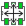
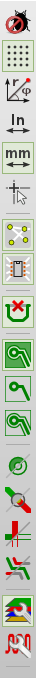
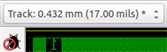
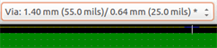
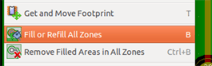
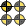
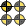

Manuel de référence
Copyright
Ce document est la propriété des contributeurs ci-dessous, copyright © 2010-2016. Vous pouvez le distribuer et/ou le modifier selon les termes de la GNU General Public License (http://www.gnu.org/licenses/gpl.html), version 3 ou ultérieure ou bien selon la licence Creative Commons Attribution (http://creativecommons.org/licenses/by/3.0/), version 3.0 ou ultérieure.
Toutes les marques apparaissant dans ce document appartiennent à leurs propriétaires respectifs.
Contributeurs
Jean-Pierre Charras, Fabrizio Tappero, Marc Berlioux.
Traduction
Marc Berlioux <marc.berlioux@gmail.com>, 2015-2016.
Retours
Merci de signaler vos corrections de bugs, suggestions ou nouvelles versions ici :
-
Documentation de KiCad : https://github.com/KiCad/kicad-doc/issues
-
Bugs logiciel KiCad : https://bugs.launchpad.net/kicad
-
Traductions de KiCad : https://github.com/KiCad/kicad-i18n/issues
Date de publication et version du logiciel
17 mars 2014.
1. Introduction à Pcbnew
1.1. Description
Pcbnew est un outil logiciel puissant de création de circuits imprimés disponible pour les systèmes d’exploitation Linux, Microsoft Windows et Apple OS X. Pcbnew est utilisé en combinaison avec le programme de saisie de schéma Eeschema pour créer des circuits imprimés.
Pcbnew gère des librairies d’empreintes. Chaque empreinte est le dessin d’un composant physique, incluant les pastilles qui établissent les connexions sur le circuit. Les empreintes nécessaires sont automatiquement chargées lors de la lecture de la Netliste. Toute modification des sélections d’empreintes ou de l’annotation peut être effectuée dans le schéma et mise à jour dans Pcbnew par la régénération de la netliste et sa relecture dans Pcbnew.
Pcbnew fournit un outil de vérification des règles de conception (DRC), qui évite les problèmes de distance entre les pistes ou les pastilles, et qui évite également les mauvaises ou les non-connexions de lignes électriques. Lors de l’utilisation du routeur interactif, il vérifie en permanence les règles de conception et vous aide à tracer automatiquement des pistes individuelles.
Pcbnew fournit un affichage du chevelu, montrant les liaisons des broches d’empreintes qui sont connectées sur le schéma. Ces connexions suivent dynamiquement le déplacement des empreintes et le tracé des pistes.
Pcbnew a un autorouteur simple mais efficace, pour aider à la production du circuit imprimé. L’Export/Import au format dsn SPECCTRA lui permet également l’utilisation d’autres auto-routeurs plus avancés.
Pcbnew fournit des fonctions spécifiquement prévues pour la production de circuits micro-ondes à ultra hautes fréquences (comme les pastilles de formes trapézoïdales ou complexes, le tracé automatique de bobines sur le circuit imprimé, etc…).
1.2. Principales Fonctionnalités de Dessin
La plus petite unité dans Pcbnew est de 1 nanomètre. Toutes les dimensions sont stockées sous forme de nanomètres.
Pcbnew peut générer jusqu'à 32 couches de cuivre, 14 couches techniques (sérigraphies, masques de soudure, adhésif de composant, pâte à souder et découpes des contours), plus 4 couches auxiliaires (dessins ou commentaires), et il gère en temps réel l’affichage du chevelu des pistes manquantes (rats nest).
L’affichage des éléments du PCB (pistes, pastilles, textes, dessins …) est personnalisable :
-
En mode plein ou en mode contour.
-
Avec ou sans le bon espacement des pistes.
Sur des circuits complexes, on peut choisir de cacher des couches, des zones ou les composants pour plus de clarté à l'écran. Les pistes peuvent aussi être mises en surbrillance pour fournir un contraste élevé.
Les empreintes peut être orientées sous n’importe quel angle, avec une résolution de 0.1 degré.
Pcbnew inclut un éditeur d’empreintes qui permet d'éditer individuellement les empreintes d’un PCB ou celles d’une librairie.
L'éditeur d’empreinte apporte plusieurs outils permettant de gagner du temps :
-
La numérotation rapide des pastilles, en faisant simplement glisser la souris au dessus de celles-ci dans l’ordre de la numérotation que vous désirez.
-
La génération aisée de réseaux rectangulaires ou circulaires de pastilles, pour les empreintes comme les LGA/BGA ou les empreintes circulaires.
-
L’alignement semi-automatique de rangées ou de colonnes de pastilles.
Les pastilles d’empreintes ont un ensemble de propriétés ajustables. Les pastilles peuvent être rondes, rectangulaires, ovales ou trapézoïdales. Pour les composants traversants, les perçages peuvent être décalés à l’intérieur des pastilles et être de forme ronde ou en forme de rainure. Les pastilles individuelles peuvent aussi être orientées et avoir des masques de soudure, de net, ou de pâte propres. Les pastilles peuvent également avoir une connexion pleine ou une connexion thermique pour faciliter la fabrication. Toute combinaison de pastilles individuelles peut être placée à l’intérieur d’une empreinte.
Pcbnew génère de façon aisée les fichiers nécessaires à la production :
-
Fichiers de fabrication :
-
Fichiers pour les phototraçeurs au format GERBER RS274X.
-
Fichiers de perçage au format EXCELLON.
-
-
Fichier de tracé aux formats HPGL, SVG, DXF.
-
Fichiers de tracé et de perçage au format POSTSCRIPT.
-
Impressions locales.
1.3. Remarques générales
Du fait du grand besoin de précision et de contrôle nécessaire, il est grandement suggéré d’utiliser une souris 3 boutons dans Pcbnew. Beaucoup de fonctions, comme les déplacements, le zoom, etc.. requièrent une souris 3 boutons.
Dans cette nouvelle version de KiCad, Pcbnew a vu des changements radicaux apportés par les développeurs du CERN. Ceci inclut des fonctionnalités telles qu’un nouveau moteur de rendu (modes OpenGL et Cairo), un routeur interactif "push and shove", le routage et l’ajustage des tracés différentiels et des méandres, un éditeur d’empreinte retravaillé, et beaucoup d’autres fonctions. Veuillez noter que la plupart de ces nouvelles fonctionnalités existent uniquement dans les nouveaux modes d’affichage OpenGL et Cairo.
2. Installation
2.1. Installation du logiciel
L’installation est décrite dans la documentation de KiCad.
2.2. Modification de la configuration par défaut
Un fichier de configuration par défaut kicad.pro est fourni dans kicad/share/template. Ce fichier est utilisé comme configuration initiale de tous les nouveaux projets.
Ce fichier peut être modifié pour configurer les librairies à charger.
Pour ce faire :
-
Launch Pcbnew using kicad or directly. On Windows it is in C:\kicad\bin\pcbnew.exe and on Linux you can run /usr/local/kicad/bin/kicad or /usr/local/kicad/bin/pcbnew if the binaries are located in /usr/local/kicad/bin.
-
Sélectionnez Préférences - Librairies et Dossiers.
-
Modifiez à votre convenance.
-
Sauvegardez la configuration modifiée (Sauver Préférences) vers kicad/share/template/kicad.pro.
2.3. Gestion des Librairies d’Empreintes : anciennes versions
Vous avez accès à la liste des librairies initiales à partir du menu Préférences :

L’image ci-dessous montre la fenêtre qui permet de paramétrer la liste des librairies :

Vous pouvez l’utiliser pour ajouter toutes les librairies contenant les empreintes nécessaires à votre projet. Vous devez également supprimer les librairies inutilisées des nouveaux projets, pour éviter des problèmes avec les noms d’empreintes. Il faut noter qu’il y a un problème avec la liste des librairies d’empreintes lorsque des noms d’empreintes en double existent dans plus d’une librairie. Dans ce cas là, l’empreinte sera chargée à partir de la première librairie trouvée dans la liste. Si ce problème survient (vous ne pouvez pas charger l’empreinte désirée), il convient de modifier l’ordre de la liste des librairies en utilisant les boutons "Monter" et "Descendre" dans la fenêtre ci-dessus, ou de donner à l’empreinte un nom unique en utilisant l'éditeur d’empreintes.
2.4. Gestion des Librairies d’Empreintes : dépôts .pretty
À partir de la version 4.0, Pcbnew utilise une nouvelle implémentation de table de librairies pour gérer les librairies d’empreintes. Les informations données dans la section précédentes ne sont donc plus valides. On accède au gestionnaire des librairies d’empreintes par :

L’image ci-dessous montre la fenêtre d'édition de la table des librairies d’empreintes qui s’ouvre par le menu "Préférences", "Gestionnaire des Librairies d’Empreintes".
La table des librairies d’empreintes est utilisée pour attribuer un pseudonyme à chaque librairie d’empreintes, de chaque type supporté. Ce pseudo sera utilisé pour rechercher des empreintes, en remplacement de la méthode précédente, qui ordonnait les librairies par leur chemin. Ceci permet à Pcbnew d’accéder à des empreintes ayant le même nom dans différentes librairies, en s’assurant que ce soit l’empreinte correcte qui est chargée à partir de la librairie appropriée. Il permet également à Pcbnew d’utiliser des librairies provenant d’autres logiciels de PCB tels que Eagle ou GEDA.
2.4.1. Table des Librairies Globales
La table des librairies globales d’empreintes contient la liste des librairies qui sont toujours disponibles, quel que soit le fichier de projet actuellement chargé. La table est enregistrée dans un fichier fp-lib-table dans le dossier personnel de l’utilisateur. L’emplacement de ce dossier dépend du système d’exploitation utilisé.
2.4.2. Table des Librairies Spécifiques au Projet
La table des librairies spécifiques au projet contient la liste des librairies d’empreintes qui sont disponibles spécifiquement pour le projet actuellement chargé. Cette table ne peut être modifiée que quand elle est chargée en même temps que le fichier de circuit imprimé du projet. Si aucun fichier n’est chargé, ou s’il n’y a pas de fichier de table de librairies d’empreintes dans le dossier du projet, une table vide sera créée, et pourra être éditée et enregistrée plus tard, avec le fichier d’affectation des empreintes.
2.4.3. Configuration Initiale
Quand PcbNew ou CvPcb sont lancés pour la première fois, et que le fichier table des librairies d’empreintes globales fp-lib-table n’a pas été trouvé dans le dossier personnel de l’utilisateur, ils tenteront de copier le fichier fp-lib-table par défaut, du dossier système KiCad / template dans le dossier personnel de l’utilisateur. Si le fichier fp-lib-table ne peut être trouvé, une table de librairies d’empreintes vide sera créée dans le dossier personnel de l’utilisateur. Dans ce cas, l’utilisateur pourra copier fp-lib-table manuellement, ou configurer la table à la main. La table des librairies d’empreintes par défaut inclut toutes les librairies d’empreintes standards, qui sont installées en même temps que KiCad.
2.4.4. Ajouter des Entrées dans la Table
Pour utiliser une librairie d’empreintes, elle doit d’abord être ajoutée à l’une ou l’autre des tables, globale ou spécifique au projet. La table spécifique au projet est utilisable uniquement lorsque vous avez un fichier circuit ouvert. Chaque entrée de la table doit avoir un pseudo unique. Ce pseudo n’a pas besoin d'être lié au nom réel du fichier ou au chemin de la librairie. Le caractère : ne peut pas être utilisé dans le pseudo. Chaque entrée de librairie doit avoir un chemin d’accès et/ou un nom de fichier valides, suivant le type de librairie. Les chemins peuvent être définis comme absolus, relatifs, ou par la substitution d’une variable d’environnement. Le plugin approprié doit être sélectionné pour que la librairie soit lue correctement. Pcbnew prend actuellement en charge en lecture les librairies d’empreintes : anciennes KiCad, nouvelles KiCad Pretty, Eagle, et GEDA. Il y a aussi un champ description pour ajouter une description de l’entrée de librairie. Le champ option n’est pas utilisé pour l’instant, donc les options ajoutées n’auront aucun effet lors du chargement des librairies. Veuillez noter que vous ne pouvez pas avoir des pseudos de librairies en double dans la même table. Cependant, vous pouvez avoir des surnoms de librairies en double dans les deux tables globale et spécifique au projet. L’entrée d’une table spécifique au projet aura préséance sur celle de la table globale dans le cas de noms dupliqués. Lorsque des entrées sont définies dans la table spécifique au projet, un fichier fp-lib-table contenant les entrées sera écrit dans le dossier du fichier netliste actuellement ouvert.
2.4.5. Substitution d’une Variable d’Environnement
Une des fonctionnalités les plus puissantes de la table des librairies d’empreintes est la substitution de variables d’environnement. Ceci permet d’avoir des chemins personnalisés dans des variables d’environnement, pour définir où vos librairies sont stockées. La substitution de variables d’environnement est supportée en utilisant la syntaxe ${ENV_VAR_NAME} dans le chemin de la librairie d’empreintes. Par défaut, au lancement, Pcbnew définit la variable d’environnement $KISYSMOD. Celle-ci pointe vers le dossier où ont été installées les librairies fournies avec KiCad. Vous pouvez redéfinir $KISYSMOD, ce qui vous permet de remplacer les librairies d’empreintes par défaut de KiCad par vos propres librairies. Quand un fichier de PCB est chargé, Pcbnew définit aussi $KIPRJMOD en utilisant le chemin du fichier du circuit. Cela vous permet de stocker des librairies dans le dossier du projet, sans avoir à définir leur chemin absolu dans la table des librairies spécifiques au projet.
2.4.6. Utilisation du Plugin GitHub
Le plugin GitHub est un plugin spécial, qui fournit un interface d’accès en lecture seule à un dépôt GitHub distant, constitué de librairies d’empreintes au format pretty (le nom du format de fichier d’empreinte de KiCad) et fournit accessoirement un support «Copy On Write» (COW) permettant d'éditer des empreintes lues à partir du dépôt GitHub, et de les enregistrer localement. Par conséquent, le "plugin GitHub" est pour l’accès à distance et en lecture seule des librairies d’empreintes au format pretty depuis https://github.com. Pour ajouter une entrée GitHub à la table des librairies d’empreintes, le champ «Chemin Librairie» de l’entrée dans la table doit pointer vers une URL GitHub valide.
Par exemple :
https://github.com/liftoff-sr/pretty_footprints
Typiquement, les URL GitHub ont cette forme :
https://github.com/nom_utilisateur/nom_dépot
Le "Type de Plugin" doit être réglé sur "Github". Pour activer le "Copy On Write", une option allow_pretty_writing_to_this_dir doit être ajoutée dans le champ "Options" de l’entrée. Cette option donne le "Chemin de Librairie" pour le stockage local des empreintes modifiées, lues depuis le dépôt GitHub. Les empreintes enregistrées dans ce chemin sont combinées avec la partie en lecture seule du dépôt GitHub pour créer la librairie d’empreinte. Si cette option est manquante, alors la librairie GitHub est en lecture uniquement. Si l’option est présente pour une librairie GitHub, alors toute écriture vers cette librairie hybride se fera dans le répertoire *.pretty local. Notez que la partie résidant sur github.com de cette librairie COW hybride est toujours en lecture seule, ce qui signifie que vous ne pouvez pas modifier ou supprimer quelque empreinte que ce soit directement dans le dépôt GitHub. Le type de ces librairies hybrides restera «GitHub» dans les paragraphes à venir, mais il se compose à la fois de la portion locale en lecture/écriture et de la portion distante en lecture seule.
Le tableau ci-dessous montre une entrée de table de librairies d’empreintes sans option allow_pretty_writing_to_this_dir :
| Pseudo nom | Chemin Librairie | Type de Plugin | Options | Description. |
|---|---|---|---|---|
github |
Github |
Empreintes Liftoff’s GH |
Le tableau ci-dessous montre une entrée de table de librairies d’empreintes avec une option COW. Notez, pour exemple seulement, l’utilisation de la variable d’environnement ${HOME}. Le dossier github.pretty est situé dans le chemin ${HOME}/pretty/. Chaque fois que vous utilisez l’option allow_pretty_writing_to_this_dir, vous devez créer ce dossier manuellement au préalable, et il doit se terminer par l’extension .pretty.
| Pseudo nom | Chemin Librairie | Type de Plugin | Options | Description. |
|---|---|---|---|---|
github |
Github |
allow_pretty_writing_to_this_dir=${HOME}/pretty/github.pretty |
Empreintes Liftoff’s GH |
Le chargement des empreintes donnera toujours la priorité aux empreintes locales trouvées dans le chemin donné par l’option allow_pretty_writing_to_this_dir. Une fois que vous avez enregistré une empreinte dans le dossier local de la librairie COW avec l'éditeur de l’empreinte, aucune empreinte GitHub mise à jour ne sera visible lorsque vous chargerez une empreinte avec le même nom qu’une empreinte enregistrée localement.
Ayez toujours un dossier local *.pretty distinct pour chaque librairie GitHub, et ne les combinez jamais en vous référant plus d’une fois au même dossier. Également, n’utilisez pas le même dossier COW (*.pretty) dans une entrée de table de librairies d’empreintes. Ça pourrait foutre le bordel. La valeur de l’option allow_pretty_writing_to_this_dir substituera toute variable d’environnement utilisant la notation ${} pour désigner le chemin, de la même façon que pour le champ "Chemin Librairie".
Quelle est la finalité du système COW ? Il est là pour booster le partage des empreintes. Si vous envoyez périodiquement vos modifications d’empreintes pretty COW au mainteneur du dépôt GitHub, vous aiderez à mettre à jour la copie GitHub. Envoyez simplement les fichiers individuels *.kicad_mod que vous aurez dans vos dossiers COW au mainteneur du dépôt GitHub. Une fois que vous aurez reçu la confirmation que vos modifications ont été validées, vous pourrez supprimer en toute sécurité vos fichiers COW, et l’empreinte mise à jour de la librairie GitHub la remplacera. Votre objectif doit être de garder le dossier COW local aussi petit que possible en contribuant souvent aux copies maîtresses partagées sur https://github.com.
Enfin, Nginx peut être utilisé comme cache du serveur github pour accélérer le chargement des empreintes. Il peut être installé localement ou sur un serveur réseau. Il y a un exemple de configuration dans les sources de KiCad : pcbnew/github/nginx.conf. La façon la plus directe mettre ceci en marche est d'écraser le fichier nginx.conf par défaut avec celui-ci, et export KIGITHUB=http://my_server:54321/KiCad, où my_server est l’adresse IP ou le nom de domaine de la machine faisant tourner le serveur nginx.
2.4.7. Scénarios d’Utilisation
Les librairies d’empreintes peuvent être définies comme globales, ou spécifiques au projet courant. Les librairies d’empreintes définies dans la table globale de l’utilisateur sont toujours disponibles, et sont décrites dans le fichier fp-lib-table du dossier personnel de l’utilisateur. Les librairies d’empreintes globales sont toujours accessibles, même s’il n’y a pas de fichier netliste ouvert. La table des librairies spécifiques au projet n’est active que pour le fichier netliste courant ouvert. La table des librairies spécifiques au projet est enregistrée dans le fichier fp-lib-table, dans le chemin du fichier netliste actuellement ouvert. Vous êtes libres de définir des librairies dans chaque table.
Chaque méthode présente des avantages et des inconvénients.
-
Vous pouvez définir toutes vos librairies dans la table globale, ce qui signifie qu’elles seront toujours disponibles quand vous en aurez besoin.
-
L’inconvénient, c’est que vous devrez parfois parcourir beaucoup de librairies pour trouver l’empreinte que vous cherchez.
-
-
Vous pouvez aussi définir toutes vos librairies sur une base spécifique par projet.
-
L’avantage, c’est que vous aurez uniquement à définir les librairies nécessaires pour le projet, ce qui réduit la recherche.
-
L’inconvénient c’est que vous devrez toujours vous rappeler d’ajouter chaque librairie d’empreintes dont vous avez besoin, pour chaque projet.
-
-
Vous pouvez aussi définir à la fois des librairies d’empreintes globales, et des librairies spécifiques au projet.
One usage pattern would be to define your most commonly used libraries globally and the library only required for the project in the project specific library table. There is no restriction on how you define your libraries.
3. Opérations Générales
3.1. Barres d’Outils et Commandes
Dans Pcbnew, il est possible d’exécuter des commandes de plusieurs façons :
-
Menus textes situés au sommet de la fenêtre principale.
-
Barre d’outils supérieure.
-
Barre d’outils latérale droite.
-
Barre d’outils latérale gauche.
-
Boutons de la souris (options de menu). Plus particulièrement :
-
Le bouton droit de la souris affiche un menu contextuel dont le contenu dépend de l'élément sous le curseur de la souris.
-
-
Clavier (Touches de fonctions F1, F2, F3, F4, Shift, Suppr/Del, +, -, Page Haut, Page Bas et Barre d'espace). La touche Echap annule généralement l’opération en cours.
L’image ci-dessous montre certains moyens d’accéder à ces opérations :

3.2. Commandes à la souris
3.2.1. Commandes de base
-
Bouton gauche
-
Un simple clic affiche les caractéristiques de l’empreinte, ou du texte sous le curseur, dans la barre d'état du bas.
-
Un double-clic affiche la fenêtre d'édition de l'élément sous le curseur (si l'élément est éditable).
-
-
Molette de la souris
-
Zoom rapide, et certaines commandes dans le gestionnaire de couches.
-
Bouton du milieu enfoncé et dessin d’un rectangle pour zoomer sur la zone décrite. La rotation de la molette permet le zoom avant-arrière.
-
-
Bouton droit
-
Affiche le menu contextuel.
-
3.2.2. Opérations sur les blocs
Les opérations de déplacement, inversion (miroir), copie, rotation et suppression de blocs sont toutes disponibles via le menu contextuel. On peut également zoomer sur la zone décrite par le bloc.
Le cadre du bloc est tracé en déplaçant la souris tout en maintenant le bouton gauche enfoncé. L’opération est exécutée lorsque le bouton est relâché.
En maintenant une des touches Shift ou Ctrl, ou Shift et Ctrl ensemble, pendant le tracé du bloc, les fonctions inverser, tourner, ou supprimer sont automatiquement sélectionnées comme indiqué dans le tableau ci-dessous :
| Action | Effet |
|---|---|
Bouton gauche de la souris enfoncé |
Trace le cadre pour déplacement du bloc |
Shift + Bouton gauche enfoncé |
Trace le cadre pour inversion du bloc |
Ctrl + Bouton gauche enfoncé |
Trace le cadre pour rotation du bloc de 90° |
Shift + Ctrl + Bouton gauche enfoncé |
Trace le cadre pour suppression du bloc |
Bouton central de la souris enfoncé |
Trace le cadre pour zoom sur le bloc |
Lors du déplacement d’un bloc :
-
Déplacer le bloc à sa nouvelle position et cliquer du bouton gauche pour déposer les éléments.
-
Pour annuler l’opération, utilisez le bouton droit et choisissez Annuler bloc dans le menu (ou appuyez sur la touche Echap).
Autrement, si aucune touche du clavier n’est enfoncé lors du tracé du bloc, utilisez le bouton droit pour afficher le menu contextuel et choisissez l’opération désirée.
Pour chaque opération sur un bloc, une fenêtre de sélection permet de limiter l’action à certains éléments.
3.3. Sélection de la taille de grille
Pendant la mise en place des éléments, le curseur se déplace sur une grille. La grille peut être activée ou désactivée à l’aide d’une icône de la barre d’outils de gauche.
Chacune des tailles de grille prédéfinies, ou une taille de grille définie par l’utilisateur, peuvent être choisies à l’aide du menu contextuel, ou par le menu déroulant de la barre d’outils du haut. La définition d’une taille de grille par l’utilisateur se fait en utilisant le menu Dimensions → Grille.
3.4. Réglage du niveau de zoom
Le niveau de zoom peut être changé par les méthodes suivantes :
-
Ouvrir le menu contextuel (bouton droit de la souris), et sélectionner le niveau de zoom désiré.
-
Utiliser les touches de fonctions suivantes :
-
F1 : Agrandir (zoom avant)
-
F2 : Réduire (zoom arrière)
-
F3 : Raffraîchir l’affichage
-
F4 : Centrer la vue sur la position du curseur
-
-
Tourner la molette de la souris.
-
Tracer un rectangle avec le bouton du milieu de la souris enfoncé pour zoomer sur la zone délimitée.
3.5. Affichage des coordonnées du curseur
Les coordonnées du curseur sont affichées en inches ou en millimètres, suivant la sélection faite par les icônes In ou mm de la barre d’outils de gauche.
Quelle que soit l’unité sélectionnée, Pcbnew travaille toujours avec une précision de 1/10000 d’inch.
La barre d'état au bas de la fenêtre affiche :
-
Le niveau de zoom actuel.
-
La position absolue du curseur.
-
La position relative du curseur (dx,dy). Notez que l’origine des coordonnées relatives du curseur peut être remis à zéro (0,0) à n’importe quelle position en appuyant sur la barre d’espace. La position relative du curseur est ensuite affichée en fonction du nouvel origine.
De plus, la position relative du curseur peut être affichée en utilisant des coordonnées polaires (angle + rayon). Ceci peut être activé ou désactivé par une icône de la barre d’outils de gauche.

3.6. Commandes au Clavier - Raccourcis
Beaucoup de commandes sont accessibles directement par le clavier, majuscules ou minuscules. La plupart des raccourcis sont affichés dans les menus. Certains n’apparaissant pas sont :
-
Delete: deletes a footprint or a track. (Available only if the Footprint mode or the Track mode is active)
-
V : si l’outil Piste est actif, change de couche, ou place une via quand un tracé de piste est en cours.
-
+ et - : sélectionne la couche suivante ou précédente.
-
?: display the list of all hot keys.
-
Espace : remet à zéro l’origine des coordonnées relatives.
3.7. Opérations sur les blocs
Les opérations de déplacement, inversion (miroir), copie, rotation et suppression de blocs sont toutes disponibles via le menu contextuel. On peut également zoomer sur la zone décrite par le bloc.
Le cadre du bloc est tracé en déplaçant la souris tout en maintenant le bouton gauche enfoncé. L’opération est exécutée lorsque le bouton est relâché.
En maintenant une des touches Shift ou Ctrl, ou Shift et Ctrl ensemble, ou Alt, pendant le tracé du bloc, les fonctions inverser, tourner, supprimer ou copier sont automatiquement sélectionnées comme indiqué dans le tableau ci-dessous :
| Action | Effet |
|---|---|
Bouton gauche de la souris enfoncé |
Déplacement du bloc |
Shift + Bouton gauche enfoncé |
Inversion du bloc |
Ctrl + Bouton gauche enfoncé |
Rotation du bloc de 90° |
Shift + Ctrl + Bouton gauche enfoncé |
Suppression du bloc |
Alt + Bouton gauche enfoncé |
Copie du bloc |
Quand une opération est faite sur un bloc, une fenêtre de sélection apparaît, qui permet de choisir les éléments concernés par l’action.
Toutes les commandes ci-dessus peuvent être annulées par cette fenêtre, ou en appuyant sur la touche Echap.
3.8. Unités utilisées dans les fenêtres
Les unités utilisées pour afficher les dimensions sont en pouces (inches) et
en mm. L’unité souhaitée est sélectionnée en cliquant sur une des icônes de
la barre d’outils de gauche :

 . Mais on peut aussi entrer l’unité utilisée
pour définir une valeur, lors de la saisie d’une nouvelle valeur.
. Mais on peut aussi entrer l’unité utilisée
pour définir une valeur, lors de la saisie d’une nouvelle valeur.
Les unités acceptées sont :
1 in |
1 pouce (inch) |
1 " |
1 pouce (inch) |
25 th |
25 thou (millième de pouce) |
25 mi |
25 mils (identique au thou) |
6 mm |
6 mm |
Les règles sont :
-
Les espaces entre nombre et unités sont autorisés.
-
Seules les deux premières lettres sont significatives.
-
Pour les pays utilisant un autre séparateur décimal que la virgule, le point (.) peut également être utilisé. Ainsi 1,5 et 1.5 seront identiques pour les français.
3.9. Barre de menus
La barre des menus du haut permet d’accéder aux fichiers (chargement et enregistrement), aux options de configuration, d’impression, de tracé, et aux fichiers d’aide.

3.9.1. Menu Fichiers

Le menu Fichiers permet le chargement, la sauvegarde des fichiers de circuits imprimés, ainsi que l’impression et le tracé du circuit imprimé. Il permet l’exportation (au format GenCAD 1,4) du circuit pour l’utilisation avec des testeurs automatiques.
3.9.2. Menu Editer
Permet quelques actions d'édition globales :

3.9.3. Menu Affichage

Fonctions de Zoom et d’affichage du circuit en 3D.
3D Visualisateur
Ouvre le visualisateur 3D. Exemple :

Commutation d’affichages
Permet de commuter l’affichage :
-
mode de base (défaut)
-
mode OpenGL
-
mode Cairo
3.9.4. Menu Placer
On y retrouve les fonctions de la barre d’outils de droite.
3.9.5. Menu Routage
Fonctions de routage.
3.9.6. Menu Préférences

Permet :
-
Sélection des librairies d’empreintes.
-
Afficher/Cacher le Gestionnaire de Couches (sélection des couleurs pour l’affichage des couches et autres éléments. Permet aussi d’afficher/cacher les éléments).
-
Paramétrage des options générales (unités, etc…).
-
Paramétrage des options d’affichage
-
Création, édition (et relecture) du fichier des raccourcis clavier.
3.9.7. Menu Dimensions

Un menu important, qui permet le réglage :
-
De la taille de grille utilisateur.
-
Des tailles des textes et de l'épaisseur de ligne des tracés.
-
Des dimensions et caractéristiques des pads (pastilles).
-
Des valeurs globales pour les couches des masques de soudure et de pâte à souder.
3.9.8. Menu Outils

3.9.9. Menu Règles de Conception

Permet d’accéder à deux boites de dialogues :
-
Éditeur des Règles de Conception (dimensions des pistes et vias, distances d’isolation).
-
Options Couches (nombre de couches, activation et noms des couches).
3.9.10. Menu Aide
Permet d’accéder aux manuels utilisateur et aux informations de version.
3.10. Barre d’Outils Supérieure
Cette barre d’outils donne accès aux principales fonctions de Pcbnew.

|
Création d’un nouveau circuit imprimé. |
|
Ouverture d’un circuit imprimé existant. |
|
Sauvegarde d’un circuit imprimé. |
|
Ajustage de la feuille de dessin, et modification des propriétés du fichier. |
|
Ouvre l'éditeur des empreintes des librairies ou du circuit. |
|
Ouvre le visualisateur des empreintes des librairies ou du circuit. |
|
Défaire/Refaire les dernières commandes (jusqu'à 10). |
|
Affiche la fenêtre d’impression du circuit. |
|
Affiche la fenêtre de tracé du circuit. |
|
Zoom avant et Zoom arrière (relativement au centre de l'écran). |
|
Rafraîchit l'écran. |
|
Ajuste le zoom au circuit. |
|
Recherche d’une empreinte ou d’un texte. |
|
Opérations sur les Netlistes (sélection, lecture, test et compilation). |
|
Contrôle automatique des pistes : DRC (Design Rule Check). |
|
Sélection de la couche de travail. |
|
Sélection d’une paire de couches (pour les vias). |
 |
Mode Empreinte : si enfoncé, active certaines options d’empreintes du menu contextuel. |
|
Mode Routage : si enfoncé, active certaines options de routage du menu contextuel. |
|
Accès direct au routeur Freerouter. |
|
Affiche/Cache la console de scripting Python. |

3.10.1. Barre d’Outils Auxiliaire
|
Sélection d’une largeur de piste déjà en utilisation. |
|
Sélection d’une taille de via déjà en utilisation. |
|
Largeur de piste automatique : si activée lors de la création d’une nouvelle piste, débutant depuis une piste existante, la largeur de la nouvelle piste est la même que celle existante. |
|
Sélection de la taille de grille. |
|
Sélection du facteur de zoom. |


3.11. Barre d’Outils Latérale Droite
Cette barre d’outils contient les outils d'édition pour modifier le circuit affiché dans Pcbnew.
|
|
Sélectionne le mode standard. |
|
Surbrillance de l'équipotentielle sélectionnée en cliquant sur une piste ou une pad. |
|
|
Affichage du chevelu local (Pad ou Empreinte). |
|
|
Ajoute une empreinte depuis une librairie. |
|
|
Placement de pistes et vias. |
|
|
Placement de zones cuivrées remplies. |
|
|
Placement de zones d’exclusion (sur couches cuivrées). |
|
|
Tracé de lignes sur couches techniques (couches non cuivrées). |
|
|
Tracé de cercles sur couches techniques (couches non cuivrées). |
|
|
Tracé d’arcs de cercles sur couches techniques (couches non cuivrées). |
|
|
Placement de textes. |
|
|
Tracé de dimensions sur couches techniques (couches non cuivrées). |
|
|
Ajout de mires de superposition (visibles sur toutes les couches). |
|
|
Suppression de l'élément pointé par le curseur. Note : lors d’une suppression, si plusieurs éléments pointés sont superposés, la priorité est donnée au plus petit (dans l’ordre décroissant des priorités pistes, textes, empreintes). La fonction "Défaire" de la barre d’outils du haut permet l’annulation de la dernière suppression d'élement. |
|
|
Ajustage du point d’origine du perçage et du placement d’empreintes. |
|
|
Origine de la grille. Utile principalement pour l'édition et le placement d’empreintes. Peut aussi être réglé dans le menu Dimensions/Grille. |
-
Placement d’empreintes, pistes, zones remplies, textes, etc…
-
Surbrillance d'équipotentielles.
-
Création de notes, d'éléments graphiques, etc…
-
La suppression d'éléments.
3.12. Barre d’Outils Latérale Gauche
La barre d’outils de gauche contient les options de contrôle et d’affichage qui agissent sur l’interface de Pcbnew.
 |
|
Active/Désactive le DRC (Design Rule Checking). Attention: quand le DRC est arrêté, des connexions incorrectes peuvent être réalisées. |
|
Affiche/Cache la grille. Note : une grille fine peut ne pas être affichée en dessous d’un niveau de zoom suffisant. |
|
|
Affichage des coordonnées relatives polaires dans la barre d'état. |
|
|
Affichage/Saisie des coordonnées ou des dimensions en inches ou en millimeters. |
|
|
Change la forme du curseur. |
|
|
Affiche le chevelu général (connexions incomplètes entre empreintes). |
|
|
Affiche le chevelu dynamiquement pendant le déplacement. |
|
|
Active/Désactive la suppression automatique d’une piste pendant son redessin. |
|
|
Affiche les zones remplies. |
|
|
N’affiche pas les zones remplies. |
|
|
Affiche seulement le contour des zones remplies. |
|
|
Affichage des pads en mode contour ou normal. |
|
|
Affichage des vias en mode contour ou normal. |
|
|
Affichage des pistes en mode contour ou normal. |
|
|
Mode d’affichage haut contraste ou normal. Dans ce mode la couche active est affichée normalement, tandis que les autres couches sont affichées en gris. Utile pour le travail sur les circuits multi-couches. |
|
|
Affiche/Cache le Gestionnaire de Couches. |
|
|
Accès aux outils de micro-ondes. En cours de développement. |
3.13. Menus contextuels et édition rapide
Un clic droit de la souris ouvre un menu contextuel dont le contenu dépend de l'élément pointé par le curseur.
Celui-ci donne accès au :
-
Changement d’affichage (centrer l’affichage sur le curseur, zoom avant-arrière, sélection du facteur de zoom).
-
Changement de taille de grille.
-
Également, un clic droit sur un élément permet d’en modifier les paramètres les plus courants.
Les captures d'écrans plus bas montrent à quoi ressemblent ces menus contextuels.
3.14. Modes disponibles
Il y a 3 modes lors de l’utilisation des menus contextuels. Ces modes ajoutent ou suppriment certaines commandes spécifiques dans les menus contextuels.
et
|
Mode Normal |
activé |
Mode Empreinte |
|
Mode Pistes |
3.14.1. Mode Normal
-
Menu contextuel sans sélection :

-
Menu contextuel avec une piste sélectionnée :

-
Menu contextuel avec une empreinte sélectionnée :

3.14.2. Mode Empreinte
Mêmes cas en Mode Empreinte ( activé)
-
Menu contextuel sans sélection :

-
Menu contextuel avec une piste sélectionnée :

-
Menu contextuel avec une empreinte sélectionnée :
3.14.3. Mode Pistes
Mêmes cas en Mode Pistes (
 activé)
activé)
-
Menu contextuel sans sélection :
-
Menu contextuel avec une piste sélectionnée :
-
Menu contextuel avec une empreinte sélectionnée :
4. Implémentation Schématique
4.1. Lier un schéma à un circuit imprimé
D’une manière générale, une feuille schématique est liée à un circuit imprimé au moyen d’un fichier netliste, qui est normalement produit par l'éditeur utilisé pour faire le schéma. Pcbnew accepte des fichiers de netliste faits avec Eeschema ou Orcad PCB 2. Le fichier netliste, généré à partir du schéma, ne contient généralement pas les empreintes associées aux différents composants. Par conséquent, une étape intermédiaire est nécessaire. Au cours de cette étape intermédiaire, l’association des composants schématiques avec des empreintes physiques est effectuée. Dans KiCad, c’est CvPcb qui est utilisé pour créer cette association et un fichier nommé *.cmp est produit. CvPcb met également à jour le fichier netliste en utilisant ces informations.
CvPcb peut également produire un "fichier stuff" *.stf, qui peut servir à la rétro-annotation du champ F2 de chaque composant dans le schéma, épargnant ainsi la tâche de ré-assignation d’empreintes à chaque passe d'édition du schéma. Dans Eeschema, la copie d’un composant copiera également l’affectation de l’empreinte, et marquera la référence comme non affectée pour l’annotation auto-incrémentielle qui suivra.
Pcbnew lit le fichier netliste .net modifié et, s’il existe, le fichier .cmp. Dans le cas d’une empreinte ayant été changée directement dans Pcbnew, le fichier .cmp est automatiquement mis à jour, évitant ainsi l’obligation d’exécuter CvPcb à nouveau.
Reportez-vous à la figure du manuel "Getting Started in KiCad" (Démarrer avec KiCad), section Échanges de données dans KiCad qui illustre le flux des données de KiCad, et comment sont obtenus les fichiers intermédiaires utilisés par les différents outils logiciels qui composent KiCad.
4.2. Processus de création d’un circuit imprimé
Après avoir créé votre schéma dans Eeschema :
-
Générez la netliste depuis Eeschema.
-
Assign each component in your netlist file to the corresponding land pattern (often called footprint) used on the printed circuit using Cvpcb.
-
Lancez Pcbnew, et lisez le fichier netliste. Ceci lira également le fichier .cmp contenant les associations d’empreintes.
Pcbnew chargera alors automatiquement toutes les empreintes nécessaires. Les empreintes pourront alors être placées sur la carte, manuellement ou automatiquement, et les pistes tracées.
4.3. Processus de mise à jour d’un circuit imprimé
Si le schéma est modifié, après qu’un circuit imprimé ait été généré, les étapes suivantes doivent être répétées :
-
Générez une nouvelle netliste depuis Eeschema.
-
Si les modifications apportées au schéma contiennent de nouveaux composants, les empreintes correspondantes devront être associées à l’aide de CvPcb.
-
Lancez Pcbnew, et lisez le fichier netliste modifié. Ceci relira également le fichier .cmp contenant les associations d’empreintes.
Pcbnew chargera alors automatiquement les nouvelles empreintes, ajoutera les nouvelles connexions et supprimera les connexions redondantes. Ce processus, appelé annotation "vers l’avant" (forward annotation), est un processus très courant quand un PCB est réalisé et mis à jour.
4.4. Lecture du fichier Netliste - Chargement d’empreintes
4.4.1. Boite de dialogue
Accessible par l’icône


4.4.2. Options disponibles
Sélection Empreinte |
Lien entre composants et empreintes correspondantes sur le circuit : le lien normal est par la Référence (option normale). Le timestamp peut être utilisé, après une réannotation du schéma, si l’annotation précedente a été détruite (option spéciale) |
Échange Empreinte |
Si une empreinte a changé dans la netliste : garder l’ancienne ou changer pour la nouvelle. |
Pistes non Connectées |
Garder les pistes existantes, ou supprimer les pistes erronées |
Empreintes Supplémentaires |
Supprimer les empreintes du circuit qui ne sont plus en netliste. Les empreintes avec l’attribut "Verrouillé" ne seront pas supprimées. |
Nets avec Pad Unique |
Supprime les nets avec pad unique . |
4.4.3. Chargement de nouvelles empreintes
Avec le backend GAL (Graphics Abstraction Layer), quand de nouvelles empreintes sont trouvées dans le fichier netliste, elles seront chargées, étalées, et prêtes à être placées en un groupe où vous le souhaiterez.

Avec l’ancien backend, quand de nouvelles empreintes sont trouvées dans le fichier netliste, elles sont automatiquement chargées et placées aux coordonnées (0,0).

Les nouvelles empreintes peuvent être déplacées et disposées une par une. Une meilleure façon est de les déplacer automatiquement :
Activez le Mode Empreinte ( )
Déplacez le curseur sur une zone appropriée (vide de tous composants), et cliquez sur le bouton droit :

-
Place Automatiquement Nouvelles Empreintes, s’il y a déjà un circuit avec des empreintes existantes.
-
Place Automatiquement toutes les Empreintes, la première fois (à la création du circuit).
L’image suivante vous montre le résultat :

5. Les Couches
5.1. Introduction
Pcbnew peut travailler avec 50 différentes couches (ou layers) :
-
Entre 1 et 32 couches cuivrées pour router des pistes.
-
14 couches techniques à usage fixe.
-
12 couches appairées (avant / arrière): Adhésif, Pâte à souder, Sérigraphie, Masque de soudure, Courtyard, Fabrication
-
2 couches indépendantes : Contour PCB, Marge
-
-
4 couches auxiliaires que vous pouvez utiliser comme bon vous semble : Commentaires, E.C.O. 1, E.C.O. 2, Dessins
5.2. Réglage des options des couches
Pour ouvrir les Options Couches depuis la barre de menu, sélectionnez Règles de Conception → Options Couches.
Le nombre de couches cuivrées, leurs noms et leurs fonctions seront configurées ici. Les couches techniques inutilisées peuvent être désactivées.

5.3. Description des Couches
5.3.1. Couches Cuivrées
Les couches cuivrées sont les couches de travail habituelles utilisées pour placer ou réorganiser des pistes. Les numéros de couche vont de 0 (la première couche de cuivre, sur le dessus) à 31 (dessous). Étant donné que les composants ne peuvent être placés dans les couches intérieures (de nombre 1 à 30), seules les couches 0 et 31 sont des couches composants.
Le nom de chaque couche cuivrée est modifiable. Les couches cuivrées ont un attribut fonction qui est utile lors de l’utilisation du routeur externe Freerouter . Des exemples de noms de couche par défaut sont F.Cu ou In0 pour la couche numéro 0.

5.3.2. Couches Techniques Appairées
12 technical layers come in pairs: one for the front, one for the back. You can recognize them with the "F." or "B." prefix in their names. The elements making up a footprint (pad, drawing, text) of one of these layers are automatically mirrored and moved to the complementary layer when the footprint is flipped.
Les couches techniques appairées sont :
- Adhésif (F.Adhes et B.Adhes)
-
Elles sont utilisées pour l’application d’adhésif servant à coller les composants de surface sur le circuit, généralement avant la soudure à la vague.
- Pâte à Souder (F.Paste et B.Paste)
-
Utilisé pour produire un masque permettant de déposer de la pâte à braser sur les pastilles des composants de surface, en général avant le soudage par refusion. D’ordinaire, seules les pastilles des composants de surface occupent ces couches.
- Sérigraphie (F.SilkS et B.SilkS)
-
Ce sont les couches où les éléments de dessin des composants apparaissent. C’est là où vous dessinez des choses comme la polarité des composants, l’indicateur de la première broche, la référence pour le montage, etc…
- Masque de Soudure (F.Mask et B.Mask)
-
Celles-ci définissent les masques de soudure. Toutes les pastilles doivent apparaître sur une de ces couches (composants de surfaces), ou sur les deux (composants traversants), pour empêcher le vernis de venir recouvrir les pastilles.
- Courtyard (F.CrtYd et B.CrtYd)
-
Utilisées pour montrer quel encombrement un composant prend physiquement sur le PCB.
- Fabrication (F.Fab et B.Fab)
-
Footprint assembly (?).
5.3.3. Couches Techniques Indépendantes
- Edge.Cuts
-
Cette couche est réservé pour le dessin du contour du circuit imprimé. Chaque élément (graphique, texte, …) placé sur cette couche apparaîtra sur toutes les autres couches. Utilisez cette couche uniquement pour dessiner les contours de la carte.
- Margin
-
Marge de recul du contour (?).
5.3.4. Couches à usage général
Ces couches sont destinées à n’importe quel usage. Elles peuvent être utilisées pour des textes, comme des instructions de montage ou de câblage, des dessins de construction en vue de créer un fichier pour l’assemblage ou l’usinage. Leurs noms sont :
-
Comments (Cmts.User)
-
Eco1.User
-
Eco2.User
-
Drawings (Dwgs.User)
5.4. Sélection de la couche de travail
Le choix de la couche de travail peut se faire de plusieurs façons :
-
En utilisant la barre d’outils de droite (Gestionnaire de Couches).
-
En utilisant la barre d’outils du haut.
-
Par le menu contextuel (bouton droit de la souris).
-
En utilisant les touches + et - (fonctionne seulement avec les couches cuivrées).
-
Par les raccourcis clavier.
5.4.1. Sélection par le gestionnaire de couches
5.4.2. Sélection par la barre d’outils du haut

Ceci sélectionne directement la couche de travail.
Les raccourcis clavier pour sélectionner la couche de travail y sont affichés.
5.4.3. Sélection par le menu contextuel

Le menu contextuel ouvre une boite de dialogue qui permet de choisir la couche de travail.
5.5. Sélection de paires de Couches pour les Vias
Si le bouton Ajouter pistes et vias est sélectionné sur la barre d’outils de droite, le menu contextuel offre la possibilité de changer la paire de couches utilisée pour les vias :

Cette sélection ouvre une boite de dialogue qui permet le choix des couches utilisées pour les vias.

Quand une via est placée, la couche de travail (couche active) est automatiquement positionnée sur l’autre couche de la paire utilisée pour les vias.
One can also switch to another active layer by hot keys, and if a track is in progress, a via will be inserted.
5.6. Utilisation du mode à haut contraste
On entre dans ce mode quand l’outil :
 est activé (barre d’outils de gauche).
est activé (barre d’outils de gauche).
Dans ce mode, la couche active est affichée comme dans le mode normal, tandis que toutes les autres couches sont affichées en gris.
Il y a deux cas où c’est utile :
5.6.1. Couches cuivrées en mode haut contraste
Quand un circuit utilise plus de 4 couches, ce mode permet à la couche active d'être plus facile à distinguer :
Mode Normal (couche cuivre de dessous active) :
Mode Haut-Contraste (couche cuivre de dessous active) :

5.6.2. Couches Techniques
Le second cas est quand il est nécessaire d’examiner les couches de pâte à souder et masques de soudure qui ne sont normalement pas affichées.
Les masques de pastilles sont affichés quand ce mode est actif.
Mode Normal (couche masque de soudure de dessus active) :

Mode Haut-Contraste (couche masque de soudure de dessus active) :

6. Créer et modifier un circuit
6.1. Création d’un circuit
6.1.1. Dessin du contour du circuit
C’est en général une bonne idée de définir en premier le contour du circuit. Le contour est tracé comme une séquence de segments de ligne. Sélectionnez Edge.Cuts comme couche active et utilisez l’outil Addition de lignes ou polygones graphiques pour tracer le bord, en cliquant à la position de chaque sommet, et double-cliquez pour terminer le contour. Les circuits ayant généralement des dimensions très précises, il peut être nécessaire d’utiliser l’affichage des coordonnées du curseur tout en traçant le contour. Rappelez-vous que les coordonnées relatives peuvent être mises à zéro à tout moment en utilisant la barre d’espace, et que l’on peut changer les unités par Ctrl-U. Les coordonnées relatives permettent le dessin de dimensions très précises. Il est aussi possible de dessiner un contour circulaire (ou arc) :
-
Sélectionnez l’outil Addition de graphiques (Cercle) ou Addition de graphiques (Arc de Cercle)
-
Cliquez pour placer le centre du cercle
-
Ajustez le rayon en déplaçant la souris
-
Terminez en cliquant à nouveau.
|
Note
|
L'épaisseur du contour peut être réglée dans le menu Paramètres (largeur recommandée = 150 en 1/10 de mils) ou via les Options, mais ce ne sera pas visible à moins que les graphiques ne soient affichés dans un autre mode que le mode contour. |
Le contour résultant peut ressembler à ceci :

6.1.2. Utilisation d’un dessin DXF pour le contour du circuit
Un autre moyen de dessiner le contour est d’importer un dessin au format DXF.
L’utilisation de cette fonctionnalité permet de dessiner des circuits aux formes beaucoup plus complexes qu’avec les possibilités de dessin de Pcbnew.
Par exemple, un logiciel de CAO mécanique peut être utilisé pour définir un circuit qui s’insère dans un boîtier particulier.
Préparation d’un dessin DXF pour l’importation dans KiCad
Les capacités d’importation de DXF dans KiCad ne supportent pas les éléments DXF comme POLYLINES ou ELLIPSES, et les fichiers DXF qui utilisent ces fonctionnalités ont besoin de quelques étapes de conversion pour les préparer à l’importation.
Un logiciel comme LibreCAD peut être utilisé pour faire ces conversions.
La première étape consiste à briser (Explode) les POLYLINES en formes plus simples. Dans LibreCAD, suivez ces étapes :
-
Ouvrez une copie du fichier DXF.
-
Sélectionnez la forme du circuit (les formes sélectionnées sont affichées avec des pointillés).
-
Dans le menu Modifier, choisissez Explode.
-
Appuyez sur Entrée.
L'étape suivante consiste à diviser les courbes complexes comme les ELLIPSES, en segments de ligne qui s’approchent de la forme requise. Cela se fait automatiquement lorsque le fichier DXF est exporté ou enregistré dans l’ancien format DXF R12 (comme le format R12 ne supporte pas les formes de courbes complexes, les programmes de CAO convertissent ces formes en segments de ligne. Certaines applications de CAO permettent la configuration du nombre ou de la longueur des segments de ligne utilisés). Dans LibreCAD la longueur des segments est généralement suffisamment petite pour les utiliser dans les contours de cartes.
Dans LibreCAD, utilisez les étapes suivantes pour exporter vers le format de fichier DXF R12 :
-
Dans le menu Fichier, cliquez sur Enregistrer Sous…
-
Au bas de la fenêtre Save Drawing As, il y a un menu déroulant Files of type:. Choisissez Drawing Exchange DXF R12.
-
Donnez éventuellement un autre nom au fichier dans le champ File name:.
-
Cliquez sur Save
Votre DXF est maintenant prêt à être importé dans KiCad.
Importation du dessin DXF dans KiCad
Les étapes suivantes décrivent l’importation d’un contour de circuit dans KiCad à partir du fichier DXF préparé. Notez que le comportement d’importation est légèrement différent selon le mode de canvas utilisé.
Utilisation du mode canvas par "défaut" :
-
Dans le menu Fichier, choisissez Importer, puis Fichier DXF.
-
Dans la fenêtre Importation Fichier DXF cliquez sur Examiner et sélectionnez le fichier DXF préparé à importer.
-
Dans Placer l’origine DXF (0,0) au point: sélectionnez le positionnement de l’origine du DXF par rapport aux coordonnées du circuit (le circuit Kicad a pour (0,0) le coin supérieur gauche). Pour l’option «Position définie par l’utilisateur", entrez les coordonnées dans les champs «Position X» et «Position Y '.
-
Dans le menu déroulant Couche, sélectionnez la couche du circuit à remplir avec l’importation. Edge.Cuts doit être choisi pour le contour du circuit.
-
Cliquez sur Valider.
Utilisation des modes canvas "OpenGL" ou "Cairo" :
-
Dans le menu Fichier, choisissez Importer, puis Fichier DXF.
-
Dans la fenêtre Importation Fichier DXF cliquez sur Examiner et sélectionnez le fichier DXF préparé à importer.
-
Les options Placer l’origine DXF (0,0) au point: sont ignorées dans ce mode.
-
Dans le menu déroulant Couche, sélectionnez la couche du circuit à remplir avec l’importation. Edge.Cuts doit être choisi pour le contour du circuit.
-
Cliquez sur Valider.
-
Le contour est maintenant attaché au curseur de la souris et peut être déplacé dans la zone de dessin du circuit.
-
Cliquez pour poser le contour.
Exemple de forme DXF importée
Here is an example of a DXF import with a board that had several elliptical segments approximated by a number of short line segments:

6.1.3. Lecture de la netliste générée à partir du schéma
Cliquez sur l’icône
 pour afficher la
fenêtre de Netliste :
pour afficher la
fenêtre de Netliste :
Si le nom (chemin) de netliste est incorrect, utilisez le bouton Examiner pour choisir le fichier de netliste souhaité. Puis cliquez sur Lire Netliste Courante. Tous les empreintes non déjà chargées apparaîtront, empilées les unes sur les autres (nous verrons ci-dessous comment les déplacer automatiquement).

Si aucune des empreintes n’ont été placées, toutes les empreintes apparaîtront sur le circuit au même endroit, ce qui les rend difficiles à reconnaître. Il est possible de les étaler automatiquement (en utilisant la commande «Étalement et placement globaux' accessible par le bouton droit de la souris). Voici le résultat d’un tel étalement automatique :

|
Note
|
Si un circuit est modifié, en remplaçant une empreinte existante par une nouvelle dans CvPcb (par exemple, pour passer une résistance de 1/8W à 1/2W), il sera nécessaire de supprimer le composant existant avant que Pcbnew ne charge l’empreinte de remplacement. Toutefois, si une empreinte doit être remplacée par une empreinte existante, il est plus facile de le faire en utilisant le menu d’empreinte accessible en cliquant sur le bouton droit de la souris au-dessus de l’empreinte en question. |
6.2. Correction d’un circuit
Il est souvent nécessaire de modifier un circuit après un changement dans le schéma.
6.2.1. Étapes à suivre
-
Créez une nouvelle netliste à partir du schéma modifié. Si de nouveaux composants ont été ajoutés, associez les à leurs empreintes correspondantes dans CvPcb.
-
Lisez la netliste dans Pcbnew.
6.2.2. Destruction de pistes incorrectes
Pcbnew est capable de supprimer automatiquement les pistes qui sont devenues incorrectes à la suite de modifications. Pour ce faire, cochez l’option "Supprimer" dans la case Pistes non connectées de la fenêtre de netliste :

Toutefois, il est parfois plus rapide de corriger manuellement ces pistes (l’outil DRC permet leur identification).
6.2.3. Composants supprimés
Pcbnew peut supprimer les empreintes correspondant à des composants ayant été supprimés du schéma. Ceci est facultatif.
Cela est nécessaire car il y a souvent des empreintes (par exemple les trous de vis de fixation) qui sont ajoutées au PCB mais qui n’apparaissent pas dans le schéma.

Si l’option Supprimer des "Empreintes Supplémentaires" est cochée, les empreintes correspondant à des composants non trouvés dans la netliste seront supprimées, sauf si elles ont l’option "Verrouillée" activée. C’est une bonne idée d’activer cette option pour les empreintes "mécaniques":

6.2.4. Empreintes modifiées
Si une empreinte est changée dans la netliste (en utilisant CvPcb), mais que l’empreinte a déjà été placée, elle ne sera pas modifiée par Pcbnew, sauf si l’option Changer de Échange empreinte a été cochée dans la fenêtre de netliste :

Le changement d’une empreinte (par exemple, le remplacement d’une résistance par une autre de taille différente), peut être effectué directement en éditant l’empreinte.
6.2.5. Options avancées - sélection par horodatage
Quelquefois, l’annotation du schéma est modifiée, sans qu’aucun changement matériel ne soit fait sur le circuit (cela concerne les références - comme R5, U4 …). Le PCB est donc inchangé (sauf éventuellement pour les marquages sérigraphiques). Néanmoins, en interne, les composants et les empreintes y sont représentés par leur référence. Dans ce cas, l’option Timestamp de la boîte de dialogue netliste peut être choisie avant la relecture de la netliste :

Avec cette option, Pcbnew n’identifiera plus les empreintes par leurs références, mais par leur horodatage (timestamp). Le timestamp est automatiquement généré par Eeschema (c’est la date et l’heure à laquelle le composant a été placé dans le schéma).
|
Attention
|
Le plus grand soin doit être apporté quand on utilise cette option (enregistrez le fichier avant !). Ceci parce que cette technique est compliquée dans le cas de composants contenant des unités multiples (ex : le 7400 a 4 portes dans un seul boîtier). Dans ce cas le timestamp n’est pas défini de façon unique (pour le 7400, il y en aura 4, un par unité). Néanmoins, l’option timestamp permet habituellement de résoudre les problèmes de ré-annotation. |
6.3. Échange direct d’empreintes déjà placées sur le circuit
Le changement d’une empreinte (ou plusieurs empreintes identiques) vers une autre est très utile, et très facile :
-
Double-Cliquez sur une empreinte pour ouvrir la fenêtre d'édition.
-
Cliquez sur Changer Empreinte.

Options de Changer Empreinte(s) :
Il faut choisir un nouveau nom d’empreinte et utiliserc:
-
Changer l’empreinte de xx pour l’empreinte courante.
-
Changer empreintes yy pour changer toutes les empreintes identiques à celle courante.
-
Changer empreinte ayant même valeur pour toutes les empreintes identiques à l’empreinte courante avec limitation aux composants de même valeur.
-
Update all footprints of the board for reloading of all footprints on board.
7. Placement d’empreintes
7.1. Placement assisté
Lors du déplacement d’empreintes, le chevelu de l’empreinte (les connexions
aux autres composants) peut être affiché pour aider au placement. Pour
afficher ce chevelu, le bouton
 de la
barre d’outils de gauche doit être activé.
de la
barre d’outils de gauche doit être activé.
7.2. Placement manuel
Sélectionnez l’empreinte avec le bouton droit de la souris, puis choisissez la commande Déplacer dans le sous-menu de l’empreinte. Déplacez l’empreinte à la position désirée et placez la avec le bouton gauche de la souris. Si nécessaire, l’empreinte sélectionnée peut également être tournée, renversée ou modifiée. Sélectionnez Annuler dans le menu (ou appuyez sur la touche Echap) pour annuler.
Ici vous pouvez voir l’affichage du chevelu de l’empreinte lors d’un déplacement :

Le circuit, une fois que toutes les empreintes ont été placées, peut ressembler à ça :

7.3. Distribution Automatique d’Empreintes
D’une manière générale, les empreintes ne peuvent être déplacées que si elles n’ont pas été "Verrouillées". Cet attribut peut être activé ou désactivé à partir du menu contextuel (clic droit de la souris sur l’empreinte), en étant en Mode empreinte, ou par le menu Éditer Paramètres de l’empreinte.
Comme indiqué dans le chapitre précédent, les nouvelles empreintes chargées lors de la lecture de la netliste apparaissent empilées en un seul endroit du circuit. Pcbnew permet la répartition automatique des empreintes, afin de les sélectionner et les placer à la main plus facilement.
-
Sélectionnez le "Mode empreinte", bouton de la barre d’outils du haut.
-
Le menu contextuel, activé du bouton droit de la souris, devient :
S’il y a une empreinte sous le curseur :

S’il n’y a rien sous le curseur :

Dans les deux cas, les commandes suivantes sont disponibles :
-
Étaler Toutes les Empreintes permet la distribution automatique de toutes les empreintes non verrouillées. Ceci est généralement utilisé après la première lecture de la netliste.
-
Étaler Toutes les Empreintes non déjà sur le C.I. permet la distribution automatique de toutes les empreintes qui n’ont pas encore été placées à l’intérieur du contour du PCB. Cette commande requiert que le contour du circuit ait été tracé pour savoir quelle empreintes doivent être automatiquement distribuées.
7.4. Placement Automatique d’Empreintes
7.4.1. Caractéristiques du placement automatique
La fonction de placement automatique permet le placement des empreintes sur les 2 faces du circuit imprimé (toutefois, le basculement des empreintes entre les couches cuivrées n’est pas automatique).
It also seeks the best orientation (0, 90, -90, 180 degrees) of the footprint. The placement is made according to an optimization algorithm, which seeks to minimize the length of the ratsnest, and which seeks to create space between the larger footprints with many pads. The order of placement is optimized to initially place these larger footprints with many pads.
7.4.2. Préparation
Pcbnew peut donc placer automatiquement les empreintes, mais il est nécessaire de guider ce placement, car aucun logiciel ne peut deviner à quoi l’utilisateur veut arriver.
Avant le placement automatique, on doit :
-
Créer le contour de la carte (il peut être complexe, mais doit être fermé si sa forme n’est pas rectangulaire).
-
Placer manuellement les composants dont la position est imposée (connecteurs, trous de fixations, etc…).
-
De même, si certaines empreintes CMS ou des composants critiques (les grandes empreintes par exemple) doivent être sur un côté ou dans une position spécifiques du circuit, ce doit être fait manuellement.
-
Avoir "Verrouillé" ces empreintes placées manuellement pour empêcher leur déplacement. En Mode empreinte, bouton activé, cliquer du bouton droit et choisir "Verrouille Empreinte" dans le menu contextuel. On peut également le faire par le sous-menu "Éditer Paramètres" de l’empreinte.
-
Le placement automatique peut alors être effectué. Mode empreinte activé, cliquez du bouton droit et sélectionnez Étalements et Placements Globaux, puis Placer Automatiquement toutes les Empreintes.
Lors du placement automatique, si nécessaire, Pcbnew peut optimiser l’orientation des empreintes. Cependant cette rotation ne sera tentée que si cela a été autorisé pour l’empreinte (voir les options de "Éditer Paramètres").
Habituellement, les résistances et les condensateurs non polarisés sont autorisés à une rotation de 180 degrés. Certaines empreintes (petits transistors par exemple), peuvent être autorisés à des rotations de +/- 90 et 180 degrés.
Pour chaque empreinte, un curseur autorise la rotation sur 90 degrés et un deuxième sur 180 degrés. Un réglage de 0 empêche la rotation, un réglage de 10 l’autorise, et une valeur intermédiaire indique plus ou moins la préférence de rotation.
L’autorisation de rotation peut être réglée en modifiant l’empreinte une fois qu’elle est placée sur le circuit. Toutefois, il est préférable de définir les options requises pour l’empreinte en librairie, afin que ces paramètres soient hérités à chaque fois que l’empreinte est utilisée.
7.4.3. Placement automatique interactif
Il peut être nécessaire d’interrompre le placement automatique (appuyez sur la touche Esc), et de repositionner manuellement une empreinte. L’utilisation de la commande Placer Automatiquement Empreintes Suivantes va reprendre le placement automatique à partir du moment où il a été arrêté.
La commande Placer Automatiquement Nouvelles Empreintes permet le placement automatique des empreintes qui n’ont pas déjà été placées à l’intérieur du contour du PCB. Elle ne bougera pas celles situées dans le contour de PCB, même si elles ne sont pas "verrouillées".
The command Autoplace Footprint makes it possible to execute an autoplacement on the footprint pointed to by the mouse, even if its fixed attribute is active.
7.4.4. Notes additionnelles
Pcbnew détermine automatiquement la zone possible de placement des empreintes en suivant la forme du contour de carte, qui ne sera pas forcément rectangulaire (elle peut être ronde, avoir des découpes, etc…).
Si le circuit n’est pas rectangulaire, son contour doit être fermé, de sorte que Pcbnew puisse déterminer ce qui est à l’intérieur et ce qui est en dehors. De la même façon, s’il y a des découpes internes, leurs contours devront être fermés.
Pcbnew calcule la zone possible de placement des empreintes à l’aide du contour de la carte, puis promène les empreintes tour à tour sur cette zone, afin de déterminer la position optimale où les placer.
8. Réglage des paramètres du routage
8.1. Paramètres actuels
8.1.1. Accès à la boite de dialogue principale
On accède aux paramètres les plus importants par le menu suivant :

et on les ajuste dans la fenêtre Règles de Conception.
8.1.2. Paramètres actuels
Les réglages actuels sont affichés dans la barre d’outils du haut.

8.2. Options générales
Les options générales sont accessibles par le menu Préférences → Général.
La fenêtre ressemble à ceci :

Pour la création de pistes, les paramètres nécessaires sont :
-
Limiter les pistes à 45° : Les directions de segments de pistes autorisées sont 0, 45 ou 90 degrés.
-
Utiliser deux segments pour piste : Lors de la création de pistes, 2 segments seront affichés.
-
Suppression automatique de pistes : Quand on recrée une piste, l’ancienne sera automatiquement supprimée si elle fait doublon.
-
Pads Magnétiques : Le curseur graphique devient une pastille(pad), centré sur la zone de la pastille.
-
Pistes Magnétiques : Le curseur graphique devient l’axe de la piste.
8.3. Netclasses
Pcbnew vous permet de définir différents paramètres de routage, pour chaque équipotentielle (ou net). Les paramètres sont définis pour des groupes de nets.
-
Un groupe de nets est appelé une Netclasse.
-
Il y a toujours une netclasse nommée "Default".
-
L’utilisateur peut ajouter d’autres Netclasses.
Une netclasse spécifie :
-
La largeur des pistes, les diamètres et les perçages des vias.
-
La distance d’isolement entre les pastilles (ou les vias) et les pistes.
-
Lors du routage, Pcbnew sélectionne automatiquement la netclasse correspondant à l'équipotentielle (net) de la piste à créer ou à modifier, et les paramètres de routage correspondants.
8.3.1. Réglage des paramètres du routage
Ces choix sont faits par le menu : Règles de Conception → Règles de Conception.
8.3.2. Éditeur de Netclasse
L'éditeur de Netclasse vous permet de :
-
Ajouter ou supprimer des Netclasses.
-
Ajuster les paramètres : isolation, largeur piste, dimensions des vias.
-
Regrouper des nets en netclasses.
8.3.3. Règles de Conception Globales
Les règles de conception globales sont :
-
Autoriser/Interdire l’usage des vias aveugles/enterrées.
-
Autoriser/Interdire l’usage des micro-vias.
-
Valeurs minimum autorisées pour les pistes et vias.
Le DRC générera une erreur quand une valeur inférieure au minimum spécifié sera rencontrée. Le deuxième onglet de la fenêtre :

This dialog also allows to enter a "stock" of tracks and via sizes.
Pendant le routage, on peut choisir une de ces dimensions, pour créer une piste ou une via, au lieu d’utiliser la valeur par défaut de la netclasse.
C’est utile dans des cas critiques, où une partie de piste doit avoir une dimension spécifique.
8.3.4. Paramètres des vias
Pcbnew gère trois types de vias :
-
Vias traversantes (les plus courantes).
-
Vias aveugles, ou enterrées.
-
Micro Vias, identiques aux vias enterrées, mais limitées entre une couche externe et sa voisine la plus proche. Elles sont destinées à connecter les pins BGA à la couche intérieure la plus proche. Leur diamètre est généralement très faible et elles sont percées au laser.
Par défaut, tous les vias ont le même diamètre de perçage.
Cette fenêtre spécifie les plus petites valeurs acceptables pour les vias. Sur un circuit, une via plus petite que spécifiée générera une erreur DRC.
8.3.5. Paramètres des pistes
Spécifie les plus petites valeurs acceptables pour les pistes. Sur un circuit, une piste plus petite que spécifiée générera une erreur DRC.
8.3.6. Tailles spécifiques

One can enter a set of extra tracks and/or via sizes. While routing a track, these values can be used on demand instead of the values from the current netclass values.
8.4. Exemples et dimensions typiques
8.4.1. Largeur de piste
Utilisez la plus grande valeur possible, conforme aux dimensions minimales indiquées ici.
| Unités | CLASS 1 | CLASS 2 | CLASS 3 | CLASS 4 | CLASS 5 |
|---|---|---|---|---|---|
mm |
0.8 |
0.5 |
0.4 |
0.25 |
0.15 |
mils |
31 |
20 |
16 |
10 |
6 |
8.4.2. Isolation (distance)
| Unités | CLASS 1 | CLASS 2 | CLASS 3 | CLASS 4 | CLASS 5 |
|---|---|---|---|---|---|
mm |
0.7 |
0.5 |
0.35 |
0.23 |
0.15 |
mils |
27 |
20 |
14 |
9 |
6 |
Habituellement, la distance minimale d’isolement sera très similaire à la largeur minimale de piste.
8.5. Exemples
8.5.1. Rustique
-
Clearance: 0.35 mm (0.0138 inches).
-
Track width: 0.8 mm (0.0315 inches).
-
Pad diameter for ICs and vias: 1.91 mm (0.0750 inches).
-
Pad diameter for discrete components: 2.54 mm (0.1 inches).
-
Ground track width: 2.54 mm (0.1 inches).

8.5.2. Standard
-
Isolation : 0.35mm (0.0138 inches).
-
Largeur piste : 0.5mm (0.0127 inches).
-
Pad diameter for ICs: make them elongated in order to allow tracks to pass between IC pads and yet have the pads offer a sufficient adhesive surface (1.27 x 2.54 mm -→ 0.05 x 0.1 inches).
-
Vias: 1.27 mm (0.0500 inches).

8.6. Routage manuel
Manual routing is often recommended, because it is the only method offering control over routing priorities. For example, it is preferable to start by routing power tracks, making them wide and short and keeping analog and digital supplies well separated. Later, sensitive signal tracks should be routed. Amongst other problems, automatic routing often requires many vias. However, automatic routing can offer a useful insight into the positioning of footprints. With experience, you will probably find that the automatic router is useful for quickly routing the obvious tracks, but the remaining tracks will best be routed by hand.
8.7. Aide lors de la création des pistes
Pcbnew peut afficher le chevelu complet, si le bouton
 est activé.
est activé.
Le bouton
 permet de mettre en
surbrillance un net (équipotentielle). Cliquez sur une pastille ou sur une
piste pour mettre en surbrillance le net correspondant.
permet de mettre en
surbrillance un net (équipotentielle). Cliquez sur une pastille ou sur une
piste pour mettre en surbrillance le net correspondant.
La vérification des règles électriques (DRC) vérifie le tracé des pistes en temps réel pendant la création. On ne peut pas créer une piste qui ne corresponde pas aux règles de la DRC. Il est possible de désactiver la DRC en cliquant sur un bouton. Ceci n’est cependant pas recommandé, et il ne faudra l’utiliser que dans des cas spécifiques.
8.7.1. Création de pistes
Une piste peut être créée en cliquant sur le bouton:
 . Une nouvelle piste doit débuter sur un
pad ou sur une autre piste, parce que Pcbnew doit connaître le net utilisé
pour la nouvelle piste (afin de respecter les règles de la DRC).
. Une nouvelle piste doit débuter sur un
pad ou sur une autre piste, parce que Pcbnew doit connaître le net utilisé
pour la nouvelle piste (afin de respecter les règles de la DRC).

Lors de la création d’une nouvelle piste, Pcbnew affiche les liens vers les pads non connectées les plus proches. Le nombre de ces liens est défini dans l’option "Liens Max." des Options générales.
Terminez la piste en double-cliquant, ou par le menu contextuel, ou encore par le raccourci clavier Fin (End).

8.7.2. Déplacement et traction de pistes
Lorsque le bouton
 est actif, la piste
sous la position du curseur peut être déplacée (move) avec le raccourci
clavier M. Si vous voulez tirer (drag) la piste, vous utiliserez le
raccourci clavier G.
est actif, la piste
sous la position du curseur peut être déplacée (move) avec le raccourci
clavier M. Si vous voulez tirer (drag) la piste, vous utiliserez le
raccourci clavier G.
8.7.3. Insertion de Vias
Une via ne peut être insérée que si le tracé d’une piste est en cours :
-
Par le menu contextuel.
-
Par le raccourci clavier V.
-
En basculant sur une autre couche cuivrée par le raccourci correspondant.
8.8. Sélection/édition de largeur de piste et taille de via
When clicking on a track or a pad, Pcbnew automatically selects the corresponding Netclass, and the track size and via dimensions are derived from this netclass.
As previously seen, the Global Design Rules editor has a tool to insert extra tracks and via sizes.
-
La barre d’outil du haut peut être utilisée pour choisir une dimension.
-
Quand le bouton
 est actif, la largeur de
la piste en cours peut être choisie par le menu contextuel (accessible aussi
à la création d’une piste).
est actif, la largeur de
la piste en cours peut être choisie par le menu contextuel (accessible aussi
à la création d’une piste).
-
L’utilisateur peut utiliser les valeurs par défaut des Netclasses ou une valeur spécifique.
8.8.1. Utilisation de la barre d’outils horizontale

 |
Track width selection. The symbol * is a mark for default Netclass value selection. |
|
Selecting a specific track width value. The first value in the list is always the netclass value. Other values are tracks widths entered from the Global Design Rules editor. |
 |
Via size selection. The symbol * is a mark for default Netclass value selection. |
|
Selecting a specific via dimension value. The first value in the list is always the netclass value. Other values are via dimensions entered from the Global Design Rules editor. |
|
When enabled: Automatic track width selection. When starting a track on an existing track, the new track has the same width as the existing track. |
|
Grid size selection. |
|
Zoom selection. |


8.8.2. Utilisation du menu contextuel
On peut choisir une nouvelle taille pour le routage, ou changer pour celle d’une via, ou d’une piste, déjà créée :

Si vous voulez changer la taille de plusieurs vias (ou de pistes), le meilleur moyen est d’utiliser une Netclasse spécifique pour le ou les nets qui doivent être modifiés (voir changements globaux).
8.9. Édition et modification de pistes
8.9.1. Modification de piste
Très souvent, il est nécessaire de redessiner une piste.
Nouvelle piste (en cours de tracé) :

Une fois finie :

Pcbnew détruira automatiquement l’ancienne piste si elle fait doublon.
8.9.2. Changements globaux
La fenêtre d'édition globale des tailles de pistes et de vias est accessible par le menu contextuel en cliquant du bouton droit sur une piste :

Cette boite de dialogue permet des changements globaux de pistes ou vias pour :
-
Le net actuel.
-
Le circuit entier.

9. Routeur Interactif
Le routeur interactif vous permet de router rapidement et efficacement vos PCB, en repoussant ou en contournant les éléments du PCB qui s’interposent sur le chemin de la piste que vous êtes en train de tracer.
Les modes suivants sont supportés :
-
Surbrillance des Collisions, qui met en surbrillance tous les objets posant problème au moyen d’une jolie et brillante couleur verte, et qui indique les zones violant l’isolation.
-
Pousser, qui essaie de pousser et traverser tous les éléments qui entrent en collision avec la piste en cours de routage.
-
Contourner, qui essaie d'éviter les obstacles en les rasant et en les contournant.
9.1. Réglages
Avant d’utiliser le routeur interactif, veuillez effectuer les deux choses suivantes :
-
Paramètres d’isolation Pour régler les distances d’isolation, ouvrez la fenêtre des Règles de Conception, et assurez-vous que la valeur par défaut a l’air correcte.

-
Passez en mode OpenGL, menu Affichage → Commuter l’affichage sur OpenGL, ou en appuyant sur F11.

9.2. Tracé des pistes
Pour activer l’outil de routage, appuyez sur le bouton du Routeur Interactif , ou sur la touche X. Le curseur va se transformer en une croix, et le nom de l’outil apparaîtra dans la barre d'état.
Pour débuter une piste, cliquez sur un élément (pastille, piste ou via), ou appuyez sur la touche X, tout en survolant un élément avec la souris. La nouvelle piste utilise le net de l'élément de départ. Un clic, ou l’appui sur X, sur un circuit vide, démarre une piste sans aucun net assigné.
Déplacez la souris pour définir la forme de la piste. Suivant le mode, le routeur essayera de suivre la trace de la souris, en contournant les obstacles immobiles (comme les pastilles) et en repoussant les pistes/vias gênantes sur le parcours. Le retrait du curseur de la souris remettra à leurs anciens emplacements les éléments repoussés.
Un clic sur un élément, pastille/piste/via, appartenant à la même équipotentielle (net) termine le tracé. Un clic sur un espace vide fixe les segments de piste déjà tracés et continue le routage de la piste.
Pour interrompre le tracé et annuler les changements (éléments repoussés, etc…), appuyez simplement sur Echap.
Pendant le tracé d’une piste, un appui sur V, ou la sélection de Placer Via Traversante du menu contextuel, permet d’insérer une via au bout de la piste en cours de tracé. En appuyant à nouveau sur V on annule l’insertion de la via. En cliquant à n’importe quel autre endroit, la via est insérée et le tracé continue.
En appuyant sur /, ou en sélectionnant Commuter Orientation dans le menu contextuel, on bascule la direction initiale du segment de piste entre directe ou diagonale.
|
Note
|
Par défaut, le routeur va être attiré et va coller aux centres/axes des éléments. Cette attraction peut être désactivée en appuyant sur Shift(Majuscule) pendant le tracé ou la sélection des éléments. |
9.3. Paramétrage des dimensions des pistes et des vias
Il y a plusieurs façons de sélectionner une largeur de piste / taille de via, ou de la changer pendant le routage :
-
En utilisant les raccourcis standards de KiCad.
-
En appuyant sur Q, ou en sélectionnant Dim Utilisateur des Pistes et Vias dans le menu contextuel, pour saisir une largeur de piste, ou une taille de via, personnalisée.
-
En choisissant une largeur prédéfinie du sous-menu contextuel Sélection Largeur Piste/Via.
-
En sélectionnant Utiliser la largeur de la piste de départ du sous-menu contextuel Sélection Largeur Piste/Via pour reprendre la largeur de piste de l'élément de départ, ou des pistes qui y sont déjà connectées.
9.4. Traction d’une piste (Drag)
Le routeur peut faire glisser des segments de piste, des virages et des vias. Pour tracter un élément, cliquez dessus avec la touche Ctrl enfoncée, ou survolez le à la souris et appuyez sur G, ou encore sélectionnez Drag Piste/Via dans le menu contextuel. Terminez le déplacement en cliquant à nouveau, ou annulez en appuyant sur Echap.
9.5. Options
The router behavior can be configured by pressing E or selecting Routing Options from the context menu while in the Track mode. It opens a window like the one below:
Les options sont :

-
Mode - sélectionne comment le routeur gère les violations des règles de conception (DRC) (pousser, contourner, etc…)
-
Pousser les vias - si désactivée, les vias sont considérées comme des objets inamovibles et seront contournées plutôt que poussées.
-
Sauter les obstacles - si activée, le routeur tente de déplacer les pistes en collision derrière les obstacles fixes (par exemple les pastilles) au lieu de les "réfléchir" derrière la collision
-
Supprimer les pistes redondantes - supprime les boucles pendant le routage (par ex. si la nouvelle piste assure la même connectivité qu’une déjà existante, l’ancienne piste sera supprimée). La suppression de boucle fonctionne localement (seulement entre le début et la fin de la piste en cours de tracé).
-
Rétrécissement automatique - si activée, le routeur tente de passer à travers les pads/vias de manière propre, en évitant les pistes traversantes avec des angles aigus et dentelés
-
Lissage du drag des segments - si activée, le routeur tente de fusionner plusieurs segments dentelés en un seul bien droit (en mode drag).
-
Autoriser les violations de DRC (mode Surbrillance des Collisions seulement) - permet de tracer une piste, même si on viole les règles de conception.
-
Effort de l’Optimisation - définit combien de temps le routeur doit passer à optimiser les pistes routées/poussées. Plus d’effort signifie un routage plus propre (mais plus lent), moins d’effort un routage plus rapide, mais des pistes un peu dentelées.
10. Création de zones cuivrées remplies
Les zones cuivrées sont délimitées par un contour (polygone fermé), et peuvent comporter des trous (polygones fermés à l’intérieur du contour). Une zone peut être dessinée sur une couche cuivre, ou autrement sur une couche technique.
10.1. Création de zones sur couches cuivrées
Les connexions de pastilles (et pistes) vers les zones de cuivre remplies sont vérifiées par le moteur de la DRC. Pour connecter les pads, une zone doit être remplie (et pas seulement créée). Pcbnew se sert de segments de piste ou de polygones pour remplir les zones de cuivre.
Chaque option a ses avantages et ses inconvénients, le principal inconvénient étant une augmentation du temps de rafraîchissement de l'écran sur les machines les plus lentes. Le résultat final sera toutefois le même.
Pour des raisons de temps de calcul, le remplissage de la zone n’est pas refait après chaque changement, mais seulement :
-
Quand une commande de remplissage est demandée.
-
Quand le test des Règles de Conception (DRC) est effectué.
Les zones cuivrées doivent être remplies ou re-remplies après avoir fait des modifications de pistes ou de pastilles. Les zones cuivrées (généralement les plans de masse et de puissance) sont généralement rattachées à une équipotentielle (net).
Pour créer une zone cuivrée, vous devez :
-
Régler les paramètres (nom de net, couche..). L’activation de la couche et la mise en surbrillance de ce net ne sont pas obligatoires, mais c’est une pratique recommandée.
-
Créer les limites de la zone (sinon, le circuit entier sera rempli).
-
Remplir la zone.
Pcbnew essaie de remplir toutes les zones en une seule pièce et, normalement, il n’y a pas des blocs de cuivre non connectés. Il peut arriver que certaines zones ne soient pas remplies. Les zones ne faisant partie d’aucun net ne sont pas nettoyées et peuvent avoir des zones isolées.
10.2. Création de zone
10.2.1. Création des limites de la zone
Utilisez l’outil
 . La couche active doit
être une couche cuivrée. En cliquant pour débuter le contour de la zone, la
fenêtre ci-dessous s’ouvre.
. La couche active doit
être une couche cuivrée. En cliquant pour débuter le contour de la zone, la
fenêtre ci-dessous s’ouvre.

Vous pouvez spécifier tous les paramètres pour cette zone :
-
Net (équipotentielle)
-
Couche
-
Options de remplissage
-
Options pour les pastilles
-
Niveau de priorité
Draw the zone limit on this layer. This zone limit is a polygon, created by left-clicking at each corner. A double-click will end and close the polygon. If the starting point and ending point are not at the same coordinate, Pcbnew will add a segment from the end point to the start point.
|
Note
|
|
Dans l’image qui suit, vous pouvez voir un exemple de limite de zone (polygone avec la fine ligne hachurée) :

10.2.2. Niveau de priorité
Quelquefois on a besoin de créer une petite zone à l’intérieur d’une grande.
Ceci est possible si la petite zone a une priorité supérieure à celle de la grande.
Réglage du niveau de priorité :

Voici un exemple :

Après remplissage :

10.2.3. Remplissage de la zone
Lors du remplissage d’une zone, Pcbnew enlève tous les ilôts de cuivre non connectés. Pour accéder aux commandes de remplissage, cliquez du bouton droit sur le bord de la zone.
Exécutez la commande "Remplir Zone". Ci-dessous le résultat du remplissage pour un point de départ à l’intérieur du polygone :

Le polygone est la limite de la zone de remplissage. Vous pouvez voir une surface non-remplie à l’intérieur de la zone, car cette surface n’est pas accessible :
-
Une piste vient créer une barrière, et
-
Il n’y a pas de point de départ pour le remplissage de cette surface.
|
Note
|
Vous pouvez utiliser plusieurs polygones pour créer des zones vides. Vous pouvez voir un exemple ici : |

10.3. Options de remplissage
Quand vous remplissez une zone, vous devez choisir :
-
Le mode de remplissage.
-
La distance d’isolation et l'épaisseur minimale de cuivre.
-
De quelle façon les pastilles seront dessinées, ou connectées à cette zone.
-
Les paramètres des freins thermiques.
10.3.1. Mode de remplissage
Les zones peuvent être remplies en utilisant des polygones, ou des segments. Le résultat est le même. Si vous avez des problèmes avec le mode polygone (rafraîchissement lent de l'écran), utilisez plutôt des segments.
10.3.2. Isolation et épaisseur de cuivre minimale
Un bon choix pour l’isolation est une grille qui est un peu plus grande que la grille de routage. L'épaisseur de cuivre minimale permet de s’assurer qu’il n’y aura pas de surfaces de cuivre trop petites.
|
Attention
|
Si cette valeur est trop grande, les petites formes comme les pistes des freins thermiques ne pourront pas être tracées. |
10.3.3. Options pour les pastilles
Les pastilles appartenant au net peuvent être inclues ou exclues de la zone, ou connectées avec des freins thermiques.
-
Si elles sont inclues, leur soudage ou leur dessoudage peuvent être assez difficiles, à cause de l’importante masse thermique de la zone à chauffer.

-
Si elles sont exclues, leur connexion à la zone ne sera pas très bonne.
-
The zone can be filled only if tracks exists to connect zone areas.
-
Les pastilles doivent être connectées par des pistes.
-

-
Le frein thermique est un bon compromis.
-
Pastilles connectées par 4 segments de piste.
-
La largeur des segments de piste est la valeur courante utilisée pour la largeur de piste.
-

10.3.4. Thermal relief parameters

Vous pouvez régler deux paramètres pour les freins thermiques :

10.3.5. Choix des paramètres
La valeur de l'épaisseur de cuivre pour les freins thermiques doit être plus grande que la valeur de l'épaisseur minimum pour la zone de cuivre. Sinon, ils ne pourront pas être tracés.
De la même façon, une valeur trop grande pour ce paramètre, ou pour la taille de l’antipad ne nous permettra pas de créer un frein thermique pour les petites pastilles (comme celles des composants CMS).
10.4. Ajout d’une zone vide à l’intérieur d’une zone remplie
Une zone remplie doit être existante. Pour ajouter une zone vide (une surface non-remplie à l’intérieur de la zone remplie) :
-
Faites un clic droit sur la bordure de la zone existante.
-
Choisissez Addition d’une Zone interdite du sous-menu Zones.

-
Créez le nouveau contour.

10.5. Modification des contours
Un contour de zone peut être modifié par :
-
Le déplacement d’un angle ou d’un bord.
-
L’ajout ou la suppression d’un angle.
-
L’ajout d’une zone semblable, ou d’une zone interdite.
Si des polygones se chevauchent, ils seront combinés.

Pour cela, cliquez du bouton droit sur un angle ou un bord, et choisissez la commande appropriée.
Voici un angle de zone interdite qui a été déplacé :

Voici le résultat final :
Les polygones ont été combinés.
10.5.1. Ajout d’une zone semblable
Addition de la zone semblable :

Résultat final :

10.6. Édition des paramètres de zone
Par un clic droit sur le contour, et en choisissant Éditer les propriétés de la Zone, on ouvre la fenêtre des paramètres de la zone. Les paramètres initiaux peuvent y être rentrés. Si la zone est déjà remplie, elle devra être re-remplie.
10.7. Remplissage final
Quand le circuit est terminé, on doit remplir ou re-remplir toutes les zones. Pour celà :
-
Activez l’outil Zones, bouton
 .
.
-
Clic droit pour faire apparaître le menu contextuel.
-
Choisissez Remplir ou Re-remplir Toutes les Zones : 
|
Attention
|
Le calcul peut prendre un certain temps si la grille de remplissage est fine. |
10.8. Changement des noms de nets des zones
Après la modification d’un schéma, vous pouvez changer le nom de chaque net. Par exemple, VCC peut être changé pour +5V.
Lors de la vérification globale des règles de conception, Pcbnew vérifie si le nom de net d’une zone existe, et affiche une erreur dans le cas contraire.
Il faudra modifier manuellement les paramètres de zone, pour remplacer l’ancien nom de net par le nouveau.
10.9. Création de zones sur les couches techniques
10.9.1. Création des limites de zone
This is done using the button
 . The active
layer must be a technical layer.
. The active
layer must be a technical layer.
En cliquant pour débuter le contour de la zone, la fenêtre ci-dessous s'ouvre :

Choisissez la couche technique où placer la zone, et dessinez le contour de la même façon que pour les couches cuivrées.
|
Note
|
|
10.10. Création d’une zone interdite
Sélectionnez l’outil

La couche active doit être une couche cuivrée.
Après un clic sur le point de départ, cette fenêtre s’ouvre :

On peut choisir les éléments interdits :
-
Pas de pistes.
-
Pas de vias.
-
Sans zone cuivre.
Quand une piste ou une via est à l’intérieur d’une zone interdite qui ne l’autorise pas, une erreur DRC sera générée.
Pour les zones cuivrées, la surface à l’intérieur d’une zone interdite sans zone cuivre ne sera pas remplie. Une zone interdite est comme une zone remplie, l'édition de son contour est identique à celle des zones cuivrées.
11. Fichiers de fabrication du circuit
Voyons maintenant les étapes nécessaires à la création des fichiers pour la production de votre circuit imprimé.
Tous les fichiers générés par KiCad sont situés dans le répertoire de travail qui est le même répertoire qui contient le fichier xxxx.kicad_brd pour le circuit imprimé.
11.1. Derniers préparatifs
La génération des fichiers nécessaires à la production de votre circuit imprimé comprend les étapes préparatoires suivantes.
-
Marquez chaque couche (par exemple, top ou front et bottom ou back) avec le nom du projet, en mettant le texte approprié sur chacune des couches.
-
Tout les textes sur les couches cuivrées (parfois appelées soudure ou bas) doivent être en miroir.
-
Créez les plans de masse, en modifiant les pistes si nécessaire pour s’assurer qu’ils sont contigus.
-
Placez des mires d’alignement et éventuellement les dimensions du contour de carte (ceux-ci sont habituellement placés sur l’une des couches à usage général).
Voici un exemple montrant l’ensemble de ces éléments, à l’exception des plans de masse qui ont été omis pour une meilleure visibilité :

Un repère de couleur pour les 4 couches cuivrées a également été ajouté :

11.2. Test DRC final
Avant de générer les fichiers de fabrication, un dernier test global de la DRC est très fortement conseillé.
Les zones seront remplies ou re-remplies au lancement de le DRC. Appuyez le
bouton
 pour ouvrir la fenêtre de la DRC :
pour ouvrir la fenêtre de la DRC :

Réglez les paramètres en conséquence, puis appuyez sur le bouton "Démarrer DRC".
Cette vérification finale vous permettra d'éviter de mauvaises surprises.
11.3. Réglage de l’origine des coordonnées
Définissez le point d’origine des coordonnées pour le photo-traceur et les
fichiers de perçage, il faut placer l’axe auxiliaire sur cet
origine. Utilisez l’icône
 . Déplacer
l’axe auxiliaire par un clic gauche sur l’emplacement choisi.
. Déplacer
l’axe auxiliaire par un clic gauche sur l’emplacement choisi.

11.4. Génération des fichiers pour le photo-traceur
Cela se fait par le menu Fichiers/Tracer, qui fait apparaître la fenêtre suivante :

Habituellement, les fichiers sont au format GERBER. Néanmoins, il est possible de produire des fichiers aux formats HPGL ou Postscript. Si le format Postscript est sélectionné, cette boîte de dialogue apparaîtra.
Pour ces formats, un ajustage fin de l'échelle pourra être effectué pour compenser la précision du traceur et avoir une véritable échelle 1 en sortie :

11.4.1. Format GERBER
Pour chaque couche, Pcbnew génère un fichier séparé respectant le standard GERBER 274X, par défaut au format 4.6 (chaque coordonnée dans le fichier est représentée par 10 chiffres, 4 avant la virgule et 6 après), les unités sont en pouces, et l'échelle est de 1.
Normalement, il est nécessaire de créer des fichiers pour toutes les couches de cuivre et, en fonction du circuit, pour la sérigraphie et les couches masque de soudure et pâte à souder . Tous ces fichiers peuvent être produits en une seule étape, en cochant les cases appropriées.
Par exemple, pour un circuit double face avec sérigraphie, masque de soudure et pâte à souder (pour les composants CMS), 8 fichiers devront être générés («xxxx» représente le nom du fichier .kicad_brd).
-
xxxx-F_Cu.gbr pour le côté composants.
-
xxxx-B_Cu.gbr pour le côté cuivre.
-
xxxx-F_SilkS.gbr pour la sérigraphie côté composants.
-
xxxx-B_SilkS.gbr pour la sérigraphie côté cuivre.
-
xxxx-F_Paste.gbr pour la pâte à souder côté composants.
-
xxxx-B_Paste.gbr pour la pâte à souder côté cuivre.
-
xxxx-F_Mask.gbr pour le masque de soudure côté composants.
-
xxxx-B_Mask.gbr pour le masque de soudure côté cuivre.
Format des fichiers GERBER :
Le format utilisé par Pcbnew est le format RS274X 4.6, impérial, zéros non significatifs omis, format Abs. Ce sont des paramètres très habituels.
11.4.2. Format POSTSCRIPT
L’extension standard des fichiers, dans le cas d’une sortie postscript, est .ps. Comme pour la sortie HPGL, le tracé peut être ajusté à une échelle choisie par l’utilisateur et peut être mis en miroir. Si l’option Org = Centre est actif, l’origine des coordonnées du photo-traceur est supposé être au centre du dessin.
Si l’option Imprimer cartouche sur toutes les couches est cochée, le cartouche sera tracé.
11.4.3. Options de tracé
Format Gerber :

Autres formats :

Options spécifiques au format Gerber :
Utiliser extensions Gerber Protel |
Utilise .gbl .gtl .gbs .gts .gbp .gtp .gbo .gto au lieu de .gbr comme extensions de fichiers. |
Inclure attributs étendus |
Sortie des attributs étendus dans un fichier. |
Soustraire masque de la couche sérigraphie |
Enlève la sérigraphie sur les zones de pâte à souder. |
11.4.4. Autres formats
L’extension standard dépend du type de fichier de sortie.
Certaines options ne sont pas disponibles pour certains formats.
Le tracé peut être fait à une échelle choisie par l’utilisateur et peut être mis en miroir.
Les options Marques de perçage offrent la possibilité d’avoir des pastilles remplies, percées au diamètre correct ou percées d’un même petit trou (pour centrer, lors d’un perçage à la main).
Si l’option Imprimer cartouche sur toutes les couches est cochée, le cartouche sera tracé.
11.5. Réglage des marges globales pour le masque de soudure (ou vernis épargne) et le masque de pâte à souder
Les marges des masques peuvent être réglées globalement pour les couches masque de soudure et pâte à souder. Ces marges peuvent être ajustées aux niveaux suivants.
-
Au niveau des pastilles.
-
Au niveau des empreintes.
-
Globalement.
Et Pcbnew utilise, par ordre de priorité :
-
La valeur de la pastille. Si nulle :
-
La valeur de l’empreinte. Si nulle :
-
Les valeurs globales.
11.5.1. Accès
On accède à ces options par le menu Dimensions/Marges Masque des Pads :
La fenêtre de réglage est celle-ci :

11.5.2. Marge du masque vernis épargne
une valeur proche de 0.2mm est généralement bonne. Cette valeur est positive parce que le masque est habituellement plus grand que la pastille
on peut donner une valeur minimum pour la largeur du masque, entre deux pastilles.
Si la valeur courante est plus petite que la valeur minimum, les deux masques de soudure seront fusionnés.
11.5.3. Marge du masque pâte à souder
La marge finale est la somme de la marge de la pâte à souder et d’un pourcentage de la taille de la pastille.
Cette valeur est négative parce que le masque est habituellement plus petit que la pastille
11.6. Génération des fichiers de perçage
La création d’un fichier de perçage xxxx.drl au standard EXCELLON est toujours nécessaire.
On peut aussi produire, optionnellement, un fichier rapport ou un plan de perçage.
-
Le plan de perçage peut être tracé au moyen de différents formats.
-
Le fichier de rapport est un simple fichier texte.
La génération de ces fichiers se fait par :
-
Le bouton "Créer un fichier de perçage", ou
-
Le menu Fichiers/Fichiers de Fabrication/Fichier (.drl) de Perçage.
La fenêtre des options de perçage est la suivante :

Pour fixer l’origine des coordonnées, la zone de dialogue suivante est utilisée :
-
Absolue : le système de coordonnées absolues sera utilisé.
-
Axe Auxiliaire : les coordonnées seront relatives à l’axe auxiliaire, utilisez le bouton de la barre d’outils de droite pour le fixer.
11.7. Génération de l’implantation
Pour produire les fichiers d’implantation, les couches sérigraphie composants et cuivre peuvent être tracées. Habituellement, la sérigraphie côté composant seule est suffisante pour le câblage d’un PCB. Si la sérigraphie côté cuivre est utilisée, le texte qu’elle contient devra être mis en miroir afin d'être lisible.
11.8. Génération de fichiers pour le placement automatique de composants
Cette option est accessible via le menu Fichiers/Exporter/Fichier (.cmp) de Composants. Aucun fichier ne sera toutefois généré, sauf si au moins une empreinte a l’attribut Normal + Insert activé (voir Édition d’Empreintes). Un ou deux fichiers seront produits, selon que des composants insérables seront présents sur l’une ou sur les deux faces du circuit imprimé. Une boîte de dialogue affiche les noms des fichiers créés.
11.9. Options de tracé avancées
Les options décrites ci-dessous (faisant partie de la fenêtre Fichiers/Tracer) permettent de contrôler finement le processus de tracé. Elles sont particulièrement utiles pour l’impression du marquage sérigraphique pour la documentation d’implantation.

Les options disponibles sont :
Plot sheet reference on all layers |
Trace sheet outline and the cartridge. |
Plot pads on silkscreen |
Enables/disables printing of pad outlines on the silkscreen layers (if the pads have already been declared to appear on these layers). Prevents any pads from being printed in the disabled mode. |
Plot footprint values |
Enables printing of VALUE text on the silkscreen. |
Plot footprint references |
Enables printing of the REFERENCE text on the silkscreen. |
Force plotting of invisible values/references |
Forces printing of fields (reference, value) declared as invisible. In combination with Plot footprint values and Plot footprint references, this option enables production of documents for guiding wiring and repair. These options have proven necessary for circuits using components that are too small (SMD) to allow readable placement of two separate text fields. |
Do not tent vias |
Delete the mask over the vias. |
Exclude PCB edge layer from other layers |
GERBER format specific. Do not plot graphic items on edge layer. |
Use Protel filename extensions |
GERBER format specific. When creating files, use specific extensions for each file. If disabled the Gerber file extension is .gbr. |
12. Éditeur d’Empreintes - Gestion des Librairies
12.1. Vue d’ensemble de l'Éditeur d’Empreinte
Pcbnew peut utiliser simultanément plusieurs librairies. Ainsi, lorsqu’une empreinte est chargée, toutes les librairies qui apparaissent dans la liste des librairies sont parcourues jusqu'à ce que la première instance de l’empreinte soit trouvée. Dans ce qui suit, notez que la librairie active est celle sélectionnée dans l'éditeur d’empreintes, le programme va maintenant être présenté.
L'Éditeur d’Empreintes permet la création et la modification d’empreintes :
-
L’ajout et la suppression de pastilles (pads).
-
La modification des propriétés des pastilles (forme, couche) pour une seule pastille ou, globalement, pour toutes celles d’une empreinte.
-
La modification des éléments graphiques (lignes, textes).
-
La modification des champs d’information (valeur, référence).
-
L'édition de la documentation associée (description, mots-clefs).
L'Éditeur d’Empreinte permet également la maintenance de la librairie active :
-
Liste des empreintes de la librairie active.
-
Suppression d’une empreinte de la librairie active.
-
Sauvegarde d’une empreinte en librairie active.
-
Sauvegarde de toutes les empreintes contenues dans un circuit imprimé.
Il est aussi possible de créer de nouvelles librairies.
Les extensions des fichiers librairies sont .kicad_mod, ou .mod(anciennes versions).
12.2. Accès à l'Éditeur d’Empreintes
On peut accéder à l'éditeur d’empreintes de plusieurs façons :
-
Directement, par l’icône
 de la barre
d’outils du haut de Pcbnew.
de la barre
d’outils du haut de Pcbnew.
-
Depuis la fenêtre d'édition des paramètres de l’empreinte active (voir figure ci-dessous : accessible par le menu contextuel), il y a un bouton Éditeur d’Empreintes.

Dans ce cas, l’empreinte active du circuit est automatiquement chargée dans l'éditeur, permettant sa modification immédiate, ou son archivage.
12.3. Interface de l'Éditeur d’Empreintes
Au lancement de l'éditeur d’empreintes, la fenêtre ci-dessous apparaît :
12.4. Barre d’outils supérieure de l'Éditeur d’Empreintes

Depuis cette barre d’outils, les fonctions suivantes sont disponibles :
|
Select the active library. |
|
Save the current footprint to the active library, and write it to disk. |
|
Create a new library and save the current footprint in it. |
|
Open the Footprint Viewer |
|
Access a dialog for deleting a footprint from the active library. |
|
Create a new footprint. |
|
Create a footprint using a wizard |
|
Load a footprint from the active library. |
|
Load (import) a footprint from the printed circuit board. |
|
Export the current footprint to the printed circuit board. when the footprint was previously imported from the current board. It will replace the corresponding footprint on the board (i.e., respecting position and orientation). |
|
Export the current footprint to the printed circuit board. It will be copied on to the printed circuit board at position 0. |
|
Import a footprint from a file created by the Export command. |
|
Export a footprint. This command is essentially identical to that for creating a library, the only difference being that it creates a library in the user directory, while creating a library in the standard library directory (usually kicad/modules). |
|
Undo and Redo |
|
Invokes the footprint properties dialog. |
|
Call the print dialog. |
|
Standard zoom commands. |
|
Call the pad editor. |
|
Perform a check of footprint correctness |
12.5. Création d’une nouvelle librairie
La création d’une nouvelle librairie se fait par le bouton
 , dans ce cas, le fichier sera créé par
défaut dans le dossier des librairies, ou par le bouton
, dans ce cas, le fichier sera créé par
défaut dans le dossier des librairies, ou par le bouton
 , dans ce cas, le fichier sera créé
par défaut dans votre répertoire de travail.
, dans ce cas, le fichier sera créé
par défaut dans votre répertoire de travail.
Une fenêtre de sélection de fichier permet de donner un nom à la librairie et changer son répertoire. Dans les deux cas, la librairie contiendra l’empreinte en cours d'édition.
|
Attention
|
Si une librairie de même nom existe, elle sera écrasée sans avertissement. |
12.6. Sauvegarde d’une empreinte en librairie active
L’action de sauvegarder d’une empreinte (et donc de modifier le fichier de
la librairie active) est effectuée en utilisant le bouton
 . Si une empreinte de même nom existe,
elle sera remplacée. Comme vous dépendez de la précision des empreintes de
la librairie, il est préférable de contrôler deux fois l’empreinte avant de
l’enregistrer.
. Si une empreinte de même nom existe,
elle sera remplacée. Comme vous dépendez de la précision des empreintes de
la librairie, il est préférable de contrôler deux fois l’empreinte avant de
l’enregistrer.
Il est recommandé de donner comme référence ou comme valeur à l’empreinte le nom par lequel elle sera identifiée en librairie,.
12.7. Transfert d’une empreinte d’une librairie à une autre
-
Choisissez la librairie d’origine par le bouton
 .
.
-
Chargez l’empreinte par le bouton
 .
.
-
Choisissez la librairie de destination par le bouton
.
-
Sauvez l’empreinte avec le bouton
 .
.
Vous pouvez aussi vouloir supprimer l’empreinte d’origine.
-
Sélectionnez à nouveau la librairie d’origine par le bouton
-
Supprimez l’empreinte avec le bouton

12.8. Sauvegarde de toutes les empreintes de votre circuit dans la librairie active.
Il est possible de copier toutes les empreintes d’un circuit donné en librairie active. Ces empreintes conserveront leurs noms actuels. Cette commande a deux utilités :
-
Créer une archive ou compléter une librairie avec les empreintes d’un circuit, dans le cas de la perte d’une librairie.
-
Et plus important, elle facilite la maintenance des librairies en permettant la production d’une documentation pour la librairie, comme décrit ci-dessous.
12.9. Documentation des empreintes d’une librairie
Il est fortement recommandé de documenter les empreintes que vous créez, afin de permettre une recherche rapide et fiable.
Par exemple, qui est capable de se souvenir des multiples variantes du brochage d’un boitier TO92? La fenêtre des Propriétés de l’Empreinte offre une solution simple à ce problème.

Cette fenêtre accepte :
-
Un commentaire/description sur une ligne.
-
De multiples mots-clés.
La description est affichée avec la liste des composants dans Cvpcb et, dans Pcbnew, elle est utilisée dans les boîtes de dialogue de sélection d’empreinte.
Les mots-clés permettent aux recherches de se limiter aux empreintes correspondant à ces mots clés.
Lors du chargement direct d’une empreinte (bouton
 de la barre d’outils de droite de Pcbnew),
des mots-clés peuvent être saisis dans la boîte de dialogue. Ainsi, la
saisie du texte =CONN provoquera l’affichage de la liste des empreintes
dont les mots clés contiennent le mot CONN.
de la barre d’outils de droite de Pcbnew),
des mots-clés peuvent être saisis dans la boîte de dialogue. Ainsi, la
saisie du texte =CONN provoquera l’affichage de la liste des empreintes
dont les mots clés contiennent le mot CONN.
12.10. Documentation des librairies - Pratiques recommandées
Il est recommandé de créer les librairies indirectement, en créant un ou plusieurs circuits auxiliaires qui constitueront la source (d’une partie) de la librairie, comme suit : Créer un circuit imprimé au format A4, afin d'être capable de l’imprimer facilement à l'échelle (échelle 1).
Créer les empreintes que la librairie contiendra sur ce circuit imprimé. La librairie elle-même sera créée par le menu Fichiers/Archiver Modules/Créer une Librairie et Archiver les empreintes.

La "vraie source" de la librairie sera donc le circuit auxiliaire, et c’est sur ce circuit que toute modification ultérieure des empreintes devra être faite. Naturellement, plusieurs circuits imprimés peuvent être enregistrés dans une même librairie.
C’est généralement une bonne idée de faire des librairies différentes pour les différents types de composants (connecteurs, discrets, …), comme Pcbnew est en mesure de rechercher parmi de multiples librairies lors du chargement d’empreintes.
Voici l’exemple d’une telle source de librairie :
Cette technique présente plusieurs avantages :
-
Le circuit pourra être imprimé à l'échelle et servir de documentation pour la librairie sans effort supplémentaire.
-
Des modifications futures de Pcbnew peuvent exiger la régénération des librairies, ce qui peut être fait très rapidement si des circuits sources de ce type ont été utilisés. Ceci est important, car les formats de fichiers de circuits imprimés sont garantis de rester compatibles au fur et à mesure du développement, mais ceci n’est pas forcément le cas pour le format des fichiers des librairies.
12.11. Gestion des Librairies d’Empreintes
La liste des librairies d’empreintes dans Pcbnew peut être modifiée à l’aide du Gestionnaire des Librairies d’Empreintes. Celui-ci vous permet d’ajouter ou de supprimer des librairies d’empreintes manuellement, et vous permet également d’invoquer l’Assistant d’Ajout de Librairies d’Empreintes en cliquant sur le bouton "Ajouter avec l’Assistant".
L’Assistant d’Ajout de Librairies d’Empreintes peut également être lancé depuis le menu Préférences, et peut automatiquement ajouter une librairie (avec détection de son type) à partir d’un fichier ou à partir d’une URL GitHub. L’URL des librairies officielles est : https://github.com/KiCad.
Plus de détails sur les tables de librairies d’empreintes, le gestionnaire et l’assistant peuvent être trouvés dans le manuel de référence de CvPcb à la section Table des Librairies d’Empreintes.
12.12. Gestion des Librairies de Formes 3D
Les librairies de formes 3D peuvent être téléchargées par l’Assistant d’Ajout de Librairies de Formes 3D. Il est invoqué par le menu Préférences → Téléchargement des Librairies de Formes 3D.
13. Éditeur d’empreintes - Création et Modification d’Empreintes
13.1. Vue d’ensemble de l'Éditeur d’Empreintes
L'Éditeur d’Empreintes est utilisé pour l'édition et la création d’empreintes de PCB. Ceci comprend :
-
L’ajout et la suppression de pastilles (pads).
-
La modification de pads (forme, couche), individuelle ou pour toutes les pads d’une empreinte.
-
L’ajout et la modification d'éléments graphiques (contours, textes).
-
L'édition des champs (référence, valeur, etc..).
-
L'édition de la documentation associée (description, mots-clefs).
13.2. Éléments d’empreintes
Une empreinte est la représentation physique de la pièce à insérer dans un circuit imprimé et elle doit être liée au composant symbolique correspondant de votre schéma. Chaque empreinte comporte trois éléments différents :
-
Des pastilles (ou pads).
-
Des contours graphiques et des textes.
-
Des champs.
De plus, un certain nombre d’autres paramètres doivent être correctement définis si la fonction d’auto-placement doit être utilisée. Il en va de même pour la production des fichiers d’auto-insertion.
13.2.1. Pastilles
Deux propriétés des pads sont importantes .
-
La géométrie (forme, couches, perçage).
-
Le numéro de pad, qui comporte jusqu'à quatre caractères alphanumériques. Ainsi, les éléments suivants sont tous des numéros de pastilles valides: 1, 45 et 9999, mais aussi AA56 et ANODE. Le numéro de pad doit être identique au numéro de pin correspondant dans le schéma, car il définit la correspondance des numéros de pins et pad que Pcbnew utilise pour relier les autres pins et pads.
13.2.2. Contours
Les contours graphiques sont utilisés pour dessiner la forme physique de l’empreinte. Plusieurs types de contours différents sont disponibles : lignes, cercles, arcs, et texte. Les contours n’ont aucune signification électrique, ils sont tout simplement des aides graphiques.
13.2.3. Champs
Ce sont des éléments de texte associés à une empreinte. Deux sont obligatoires et toujours présents : le champ de référence et le champ de valeur. Ceux-ci sont lus automatiquement et mis à jour par Pcbnew lorsqu’une netliste est lue, lors du chargement d’empreintes dans votre circuit. La référence est remplacée par la référence schématique appropriée (U1, IC3, etc.). La valeur est remplacée par la valeur de la pièce correspondante dans le schéma (47K, 74LS02, etc.). D’autres champs peuvent être ajoutés et ceux-ci se comportent alors comme du texte graphique.
13.3. Lancement de l'éditeur et sélection d’une empreinte à modifier
On peut lancer l'éditeur d’empreintes de deux façons :
-
Directement, par l’icône
de la barre
d’outils du haut de Pcbnew. Ceci permet la création ou la modification d’une
empreinte de la librairie.
-
Un double-clic sur une empreinte lancera le menu Propriétés de l’Empreinte, qui contient un bouton Editeur d’Empreintes. Quand cette option est utilisée, l’empreinte du circuit sera chargée dans l'éditeur, pour la modifier ou pour la sauvegarder.
13.4. Barres d’outils de l'éditeur d’empreintes
Au lancement de l'éditeur d’empreintes, la fenêtre ci-dessous apparaît :
13.4.1. Barre d’outils d'édition (côté droit)
Cette barre d’outils contient les outils pour :
-
Le placement de pads.
-
L’ajout d'éléments graphiques (contours, textes).
-
Le placement du point d’ancrage d’un composant.
-
La suppression d'éléments.
Leurs fonctions spécifiques sont les suivantes :
|
Pas d’outil. |
|
Ajout de pads. |
|
Dessin de segments de lignes et de polygones. |
|
Dessin de cercles. |
|
Dessin d’arcs de cercles. |
|
Ajout de textes graphiques (les champs ne sont pas gérés avec cet outil). |
|
Placement du point d’ancrage de l’empreinte. |
|
Suppression d'éléments. |
|
Origine de la grille. (décalage grille). Utile pour le placement de pads. L’origine de la grille peut être placé à un endroit donné (le premier pad à placer), et ensuite, la taille de grille réglée à la taille d’espacement. Le placement de pads sera ainsi très facile. |
13.4.2. Barre d’outils d’affichage (côté gauche)
Ces outils gèrent les options d’affichage de l'éditeur d’empreintes :
|
Affiche la grille. |
|
Affichage en coordonnées polaires. |
|
Unités en mm ou en inches. |
|
Change la forme du curseur. |
|
Affichage des pads en mode contour. |
|
Affichage des textes en mode contour. |
|
Affichage des contours en mode détouré. |
|
Affichage en mode fort-contraste. |
13.5. Menus Contextuels
Le bouton droit de la souris fait apparaître des menus qui dépendent de l'élément sous le curseur.
Le menu contextuel pour éditer les paramètres de l’empreinte :

Le menu contextuel pour éditer les pads:

Le menu contextuel pour éditer les éléments graphiques :
13.6. Fenêtre des propriétés des empreintes
Cette fenêtre peut être ouverte lorsque le curseur est sur une empreinte, en cliquant du bouton droit de la souris, puis en sélectionnant Éditer Paramètres

Cette fenêtre peut être utilisée pour définir les paramètres principaux de l’empreinte.
13.7. Création d’une nouvelle empreinte
Une nouvelle empreinte peut être créée par le bouton
 . Le nom de la nouvelle empreinte sera
demandé. Ce sera le nom par lequel l’empreinte sera identifiée dans la
librairie.
. Le nom de la nouvelle empreinte sera
demandé. Ce sera le nom par lequel l’empreinte sera identifiée dans la
librairie.
This text also serves as the footprint value, which is ultimately replaced by the real value (100 µF_16 V, 100 Ω_0.5 W, …).
La nouvelle empreinte nécessitera :
-
Des contours (et éventuellement des textes graphiques).
-
Des pastilles.
-
Une valeur (texte caché qui sera ensuite remplacé par la valeur réelle une fois utilisée).
Autre méthode :
Quand une nouvelle empreinte est similaire à une empreinte existante d’une librairie ou d’un circuit, voici une méthode alternative et plus rapide pour créer la nouvelle empreinte :
-
Chargez l’empreinte similaire (
,
 ou
).
ou
).
-
Modifiez le champ "Nom de l’Empreinte en Librairie" pour générer un nouvel identifiant (nom).
-
Modifiez et sauvegardez la nouvelle empreinte.
13.8. Ajout et modification de pastilles
Une fois l’empreinte créée, des pastilles peuvent être ajoutées, supprimées ou modifiées. La modification des pastilles peut être locale, affecter seulement la pastille sous le curseur, ou globale, affecter toutes les pastilles de l’empreinte.
13.8.1. Ajout de pastilles
Sélectionnez l’icône
 de la barre d’outils de
droite. Les pastilles peuvent être ajoutées en cliquant à la position
désirée du bouton gauche de la souris. Les propriétés des pastilles sont
prédéfinies dans le menu des propriétés.
de la barre d’outils de
droite. Les pastilles peuvent être ajoutées en cliquant à la position
désirée du bouton gauche de la souris. Les propriétés des pastilles sont
prédéfinies dans le menu des propriétés.
N’oubliez pas de donner un numéro à la pastille.
13.8.2. Réglage des propriétés des pastilles
On peut le faire de plusieurs façons :
-
En sélectionnant l’icône
 de la barre
d’outils horizontale.
de la barre
d’outils horizontale.
-
En cliquant sur une pastille existante et et choisissant Editer Pad. Les propriétés de la pastille peuvent ensuite être modifiées.
-
En cliquant sur une pastille existante et et choisissant Exporter Caracts. Pad. Dans ce cas, les propriétés géométriques de la pastille sélectionnée deviennent les propriétés par défaut.
Dans les deux premiers cas, la fenêtre suivante apparaîtra :

Un grand soin devra être pris pour définir correctement les couches auxquelles le pad appartiendra. En particulier, bien que les couches cuivre soient faciles à définir, la gestion des couches non-cuivre (masque de soudure, pâte à souder …) est également importante pour la fabrication et la documentation du circuit.
Le sélecteur du Type de Pad déclenche une sélection automatique des couches qui est généralement suffisante.
Pastilles rectangulaires
Pour les empreintes CMS de type VQFP/PQFP qui ont des pads rectangulaires sur les quatre côtés (à la fois horizontaux et verticaux), il est recommandé d’utiliser une seule forme (par exemple, un rectangle horizontal) et de le placer avec différentes orientations (0 pour l’horizontale et 90 degrés pour la verticale). Un redimensionnement global des pastilles pourra ensuite être effectué en une seule opération.
Rotation de pastilles
Les rotations de pastilles de -90 ou -180 degrés ne sont nécessaires que pour les pads trapézoïdaux utilisés pour des empreintes micro-ondes.
Pastilles traversantes non-métallisées
Les pastilles peuvent être définies comme Pads à Trous Non-Métallisés (NPTH).
Ces pastilles doivent être définies sur une ou toutes les couches de cuivre (de toute évidence, le trou existe sur toutes les couches cuivre).
Ce choix permet de définir des paramètres de marge spécifiques (pour le jeu d’une vis, par exemple).
Lorsque la taille du trou de pad est la même que la taille du pad, pour un pad rond ou ovale, ce pad ne sera PAS tracé sur les couches cuivre dans les fichiers GERBER.
Ces pastilles sont utilisées à des fins mécaniques, par conséquent aucun de nom de pad ou de net n’est autorisé. La connexion à un net est impossible.
Pastilles sur couches non-cuivrées
Ce sont des pastilles inhabituelles. Cette option sera utilisée pour créer des repères ou des masques sur des couches techniques.
Paramètres de décalage
La pastille 3 a un décalage Y de 15 mils :

Paramètre de Delta (pastilles trapézoïdales)
La pastille 1 a son paramètre Delta réglé à 10 mils

13.8.3. Réglage des marges pour les couches masque de soudure et masque de pâte à souder
Le réglage de la marge peut s’effectuer à trois niveaux :
-
Au niveau global.
-
Au niveau de l’empreinte.
-
Au niveau de la pastille.
Pcbnew utilisera, pour calculer les marges :
-
Les réglages au niveau pastille. Si nuls,
-
Les réglages au niveau empreinte. Si nuls,
-
Les réglages globaux.
Remarques
La forme d’une pastille du masque de soudure est généralement plus grande que la pastille elle-même. Donc la valeur du jeu sera positive. Une pastille du masque de pâte de soudure est généralement plus petite que la pastille elle-même. Donc, la valeur de la marge sera négative.
Paramètres du masque pâte à souder
Pour le masque pâte à souder, il y a deux paramètres :
-
Une valeur fixe.
-
Un pourcentage de la taille de la pastille.
La valeur réelle sera la somme de ces deux valeurs.
Réglages au niveau empreinte :

Réglages au niveau pastille :

13.9. Propriétés des champs
Il y a deux champs au moins : référence et valeur.
Leurs paramètres (attributs, taille, largeur) doivent être mis à jour. Vous pouvez y accéder par le menu contextuel, ou en double-cliquant sur le champ, ou encore par la fenêtre des propriétés de l’empreinte :

13.10. Placement automatique d’une empreinte
If the user wishes to exploit the full capabilities of the auto-placement functions, it is necessary to define the allowed orientations of the footprint (Footprint Properties dialog).
Habituellement, une rotation de 180 degrés est autorisée pour les résistances, les condensateurs non-polarisés et les autres composants symétriques.
Certaines empreintes (petits transistors, par exemple) sont souvent autorisés à tourner de +/- 90 ou 180 degrés. Par défaut, une nouvelle empreinte aura son autorisation de rotation à zéro. Celle-ci peut être ajustée en fonction de la règle suivante :
Une valeur de 0 rend la rotation impossible, 10 l’autorise complètement, et toute valeur intermédiaire représentera une rotation limitée. Par exemple, une résistance pourrait avoir une permission de 10 pour une rotation de 180 degrés (pas de limitation) et une autorisation de 5 pour une rotation +/- 90 degrés (permise, mais pas conseillée).
13.11. Attributs
La zone de dialogue des attributs est celle-ci :

-
Normal est l’attribut standard.
-
Normal + Insert indique que l’empreinte doit apparaître dans le fichier d’insertion automatique (pour les machines d’insertion automatique). Cet attribut est le plus utile pour les composants de surface (CMS).
-
Virtuel indique qu’un composant est formé directement par le circuit imprimé. Des exemples sont les connecteurs nez de cartes, ou des bobines, antennes créés au moyen d’une piste de forme particulière (comme vu parfois dans les empreintes micro-ondes).
13.12. Documentation des empreintes d’une librairie
Il est fortement recommandé de documenter les empreintes nouvellement créées, afin de faciliter une recherche rapide et précise. Qui est capable de se rappeler le brochage des multiples variantes d’une empreinte TO92 ?
La fenêtre Propriétés de L’Empreinte offre un moyen simple mais puissant pour générer la documentation.
Ce menu permet :
-
La saisie d’une ligne de commentaire (description).
-
De multiples mots-clés.
La ligne de commentaire est affichée avec la liste de composants dans CvPcb, et dans les menus de sélection d’empreinte dans Pcbnew. Les mots-clés sont utilisés pour limiter les recherches aux pièces possédant ces mots-clés.
Ainsi, en utilisant la commande Ajouter Empreinte (icône de la barre d’outils de droite dans Pcbnew), il est possible de saisir le texte = TO220 dans la boîte de dialogue pour que Pcbnew affiche la liste des empreintes possédant le mot-clé TO220.
13.13. Visualisation en 3D
Une empreinte peut avoir été associée à un fichier contenant sa représentation tridimensionnelle. Afin d’associer un tel fichier à une empreinte, sélectionnez l’onglet 3D Caract. Le panneau des options est le suivant :

Les informations à fournir :
-
Le fichier contenant la représentation 3D (créée par le modeleur 3D Wings3D, au format VRML, par la commande exporter en VRML).
-
Le chemin par défaut est kicad/modules/package3d. Dans l’exemple, le nom du fichier est discret/to_220horiz.wrl, en utilisant le chemin par défaut).
-
Les échelles x, y et z.
-
Le décalage par rapport au point d’ancrage de l’empreinte (généralement zéro).
-
La rotation initiale en degrés suivant chaque axe (habituellement zero).
L’ajustage de l'échelle permet :
-
D’utiliser le même fichier 3D pour des empreintes qui ont des formes similaires, mais différentes tailles (résistances, condensateurs, composants CMS …).
-
Pour les petits (ou les très grands) boitiers, une meilleure utilisation de la grille Wings 3D est d’avoir l'échelle de 0,1 pouce dans Pcbnew = 1 unité de grille dans Wings3D.
Si un tel fichier a été spécifié, il est possible de voir le composant en 3D.

Le modèle 3D apparaîtra automatiquement dans la représentation 3D du circuit imprimé.
13.14. Sauvegarde d’une empreinte en librairie active
La commande sauver (modification du fichier de la librairie active) est
effectué par le bouton
 .
.
Si une empreinte de même nom existe (une version plus ancienne), elle sera écrasée. Comme il est important d’avoir confiance dans ses librairies d’empreintes, ça vaut la peine de contrôler deux fois son empreinte, pour détecter des erreurs, avant de l’enregistrer.
Avant d’enregistrer, il est également recommandé de modifier la référence, ou la valeur de l’empreinte, pour qu’elle corresponde au nom de l’empreinte dans la librairie.
13.15. Sauver une empreinte vers le circuit
Si l’empreinte modifiée provient du circuit actuel, le bouton
 la mettra à jour sur la carte.
la mettra à jour sur la carte.
14. Outils avancés d'édition de PCB
Il y a quelques outils d'édition plus avancés, dans Pcbnew et l'Éditeur d’Empreintes, qui peuvent vous aider à disposer efficacement les composants sur le circuit.
14.1. Éléments dupliqués
La duplication est une méthode pour cloner un élément et le sélectionner dans la même action. Il est grosso-modo similaire à un copier-coller, mais il vous permet de "saupoudrer" les composants sur le PCB, et il vous permet de placer manuellement les composants plus facilement en utilisant l’outil "Déplacer Empreinte Exactement" (voir ci-dessous).
La duplication se fait en utilisant le raccourci clavier (Ctrl-D par défaut), ou par l’option Dupliquer Empreinte du menu contextuel. Dans l’ancien affichage, ils apparaissent comme ci-dessous, en fonction du type d'élément :


14.2. Déplacement exact d'éléments
L’outil "Déplacer Empreinte Exactement" vous permet de déplacer un élément (ou un groupe d'éléments) d’une certaine quantité, qui peut être saisie dans les formats cartésiens ou polaires, et dans toutes les unités prises en compte. Ceci est utile lorsqu’il serait plus rébarbatif autrement de changer de taille de grille, ou lorsqu’une fonction n’utilise pas l’espacement des grilles existantes.
To use this tool, select the items you wish to move and then use either the hotkey (defaults to Ctrl-M) or the context menu items to invoke the dialog. You can also invoke the dialog with the hotkey when moving or duplicating items, which can make it easy to repeatedly apply an offset to multiple components.
Déplacement exact par la saisie d’un vecteur de déplacement cartésien

Déplacement exact par la saisie d’un vecteur de déplacement polaire
La case à cocher vous permet de basculer entre les coordonnées cartésiennes (ou rectangulaires) et polaires. Tout ce qui est affiché dans le formulaire sera automatiquement converti vers l’autre système de coordonnées.
Vous entrez ensuite le vecteur de déplacement souhaité. Vous pouvez utiliser les unités indiquées par les étiquettes ("mm" dans les images ci-dessus), ou vous pouvez spécifier les unités vous-même (par exemple "1 in" pour un pouce, ou "2 rad" pour 2 radians).
En cliquant sur OK, cela appliquera la translation à la sélection. Sur Annuler, cela fermera la fenêtre, et les éléments ne seront pas déplacés. Si vous appuyez sur OK, le vecteur de déplacement sera sauvegardé et pré-rempli pour la prochaine fois où la boîte de dialogue sera ouverte, ce qui permet l’application répétée du même vecteur à de multiples objets.
14.3. Outils de Matriçage
Pcbnew et l'Éditeur d’Empreintes ont tous les deux des assistants pour créer des matrices (ou réseaux) d'éléments ou de composants, qui peuvent être utilisés pour distribuer facilement et avec précision des éléments répétitifs sur les PCBs, et dans les empreintes.
14.3.1. Activation de l’outil de matriçage
L’outil de matriçage agit sur le composant sous le curseur, ou, en mode GAL, sur une sélection. On y accède soit par le menu contextuel de la sélection, soit par un raccourci clavier (Ctrl-N par défaut). Dans l’ancien affichage, les icônes du menu contextuel montrent une matrice du type d'élément sélectionné :


 


The array tool is presented as a dialog window, with a pane for the types of arrays. There are two types of arrays supported so far: grid, and circular.
Chaque type de réseau peut être entièrement décrit dans son onglet respectif. Les options de géométrie (comment la grille sera remplie) sont sur la gauche ; les options de numérotation (y compris la progression des numéros à travers la grille) sont sur la droite.
14.3.2. Réseaux en grille
Le réseaux en grille sont des matrices de composants disposés selon une grille carrée à deux dimensions. Ce type de réseau peut également servir à produire un réseau linéaire, comportant une seule ligne ou une seule colonne.
Le panneau de réglages pour les réseaux en grille ressemble à ceci :

Options géométriques
Les options géométriques sont les suivantes :
-
Compte horizontal : le nombre de "colonnes" de la matrice.
-
Compte vertical : le nombre de "rangées" de la matrice.
-
*Espacement horizontal * : la distance horizontale entre les éléments d’une même ligne et la colonne suivante. Si le chiffre est négatif, la grille progressera de droite à gauche.
-
*Espacement vertical * : la distance verticale entre les éléments d’une même colonne et la rangée suivante. Si le chiffre est négatif, la grille progressera de bas en haut.
-
Décalage horizontal : débute chaque rangée décalée de cette distance à droite de la rangée précédente
-
Décalage vertical : débute chaque colonne décalée de cette distance sous la colonne précédente
-
Quinconce/Balayage : ajoute un décalage à chaque série de "n" rangées/colonnes, chaque rangée progressant d’1/n’ième de la dimension d’espacement correspondante :


Options de numérotation
-
Numbering Direction: Determines whether numbers proceed along rows and then moves to the next row, or down columns and then to the next column. Note that the direction on numbering is defined by the sign of the spacing: a negative spacing will result in right-to-left or bottom-to-top numbering.
-
Numérotation inversée sur des rangées ou des colonnes alternées : si sélectionnée, numérotation alternée (de gauche à droite ou de droite à gauche, par exemple), des lignes ou des colonnes. Comment les lignes ou les colonnes sont alternées dépend de la direction de numérotation. Cette option est utile pour les boîtiers comme les DIPs, où la numérotation s’incrémente sur un côté et change de sens sur l’autre.
-
Restart numbering: if laying out using items that already have numbers, reset to the start, otherwise continue if possible from this item’s number
-
Arrangement de Numérotation
-
Continu : la numérotation continue par delà une rupture de ligne/colonne - si le dernier élément de la première ligne est numéroté "7", le premier élément de la deuxième ligne sera "8".
-
Coordonné : la numérotation utilise un système à deux axes où le numéro est composé de l’index de sa ligne et de sa colonne. Celui qui vient en premier (ligne ou colonne) est défini par la direction de numérotation.
-
-
Axes de numérotation: quel "alphabet" utiliser pour numéroter les axes. Les choix sont :
-
Numérique pour une indexation avec des chiffres entiers normaux.
-
Hexadécimal pour une indexation avec des chiffres en base 16.
-
Alphabétique, moins IOSQXZ, un arrangement courant pour les composants électroniques, recommandé par ASME Y14.35M-1997 sec. 5.2 (anciennement MIL-STD-100 sec. 406.5) pour éviter la confusion entre numéros.
-
Alphabet complet, de A à Z.
-
14.3.3. Réseaux circulaires
Les réseaux circulaires distribuent les éléments autour d’un cercle ou d’un arc de cercle. Le cercle est défini par l’emplacement de la sélection (ou le centre d’un groupe sélectionné), et un point central qui est spécifié. Ci-dessous, le panneau de configuration d’un réseau circulaire :
Options géométriques
-
Centre horizontal, Centre Vertical: le centre du cercle. Le champ Rayon en-dessous se met automatiquement à jour lorsque vous les ajustez.
-
Angle : différence angulaire entre deux éléments adjacents dans la grille. Mettre à zéro pour diviser le cercle en "Nombre" d'éléments égaux.
-
Nombre : Nombre d'éléments du réseau (y compris l'élément d’origine).
-
Rotation : Pivoter chaque élément autour de sa propre position. Dans le cas contraire, l'élément sera décalé, mais pas tourné (par exemple, une pastille carrée sera toujours axée verticalement si cette option est désactivée).
Options de numérotation
Les réseaux circulaires ont seulement une dimension, et une géométrie plus simple que les grilles. La signification des options disponibles est la même que pour les grilles. Les éléments sont numérotés dans le sens horaire. Pour un réseau de sens trigonométrique, spécifiez un angle négatif.
15. KiCad Scripting Reference
Scripting allows you to automate tasks within KiCad using the Python language.
Voyez aussi la documentation de doxygen sur Python Scripting Reference.
Vous pouvez obtenir l’aide du module python en tapant pydoc pcbnew dans votre terminal.
Avec des scripts vous pouvez créer des :
-
Plugins : ce type de script est chargé au démarrage de KiCad. Exemples :
-
Assistants d’Empreintes : Pour vous faciliter la fabrication d’empreintes en remplissant des paramètres. Voir ci-dessous la section dédiée Assistants d’Empreintes.
-
Fichier I/O (en projet) : Pour vous permettre d'écrire des plugins d’import/export d’autres types de fichiers.
-
Actions (en projet) : Pour associer des actions de scripts à des événements, ou ajouter de nouveaux menus ou icônes de barres d’outils.
-
-
Scripts en Ligne de Commande : ces scripts, utilisables en ligne de commande, peuvent charger des circuits ou des librairies, les modifier, et produire en sortie des rendus ou de nouveaux circuits.
Il faut noter que la seule application de KiCad qui permette l’utilisation de scripts est Pcbnew. Il est prévu de pouvoir le faire avec Eeschema aussi dans le futur.
15.1. Objets de KiCad
L’API de scripting reflète la structure interne des objets dans KiCad/Pcbnew. BOARD est l’objet principal. Il a un jeu de propriétés et un jeu de MODULEs, TRACKs/VIAs, TEXTE_PCB, DIMENSION, DRAWSEGMENT. Les MODULEs ont ensuite des D_PADs, EDGEs, etc…
-
Voir la section BOARD ci-dessous.
15.2. Référence de Base de l’API
All the pcbnew API is provided from the "pcbnew" module in Python. GetBoard() method will return the current pcb open at editor, useful for commands written from the integrated scripting shell inside pcbnew or action plugins.
15.3. Charger et Sauvegarder un Circuit
-
LoadBoard(nom_du_fichier) : charge un circuit depuis un fichier et retourne un objet de type BOARD, en utilisant le format de fichier correspondant à l’extension du fichier.
-
SaveBoard(nom_du_fichier,circuit) : sauvegarde un objet BOARD dans le fichier, en utilisant le format de fichier correspondant à l’extension du fichier.
-
circuit.Save(nom_du_fichier) : identique au précédent, mais cette fois par la méthode de l’objet BOARD.
#!/usr/bin/env python2.7 import sys from pcbnew import * filename=sys.argv[1] pcb = LoadBoard(filename) for module in pcb.GetModules(): print "* Module: %s"%module.GetReference() module.Value().SetVisible(False) # set Value as Hidden module.Reference().SetVisible(True) # set Reference as Visible pcb.Save("mod_"+filename)
15.4. Lister et Charger des Librairies
#!/usr/bin/python from pcbnew import * libpath = "/usr/share/kicad/modules/Sockets.pretty" print ">> enumerate footprints, pads of",libpath # Load the suitable plugin to read/write the .pretty library # (containing the .kicad_mod footprint files) src_type = IO_MGR.GuessPluginTypeFromLibPath( libpath ); # Rem: we can force the plugin type by using IO_MGR.PluginFind( IO_MGR.KICAD ) plugin = IO_MGR.PluginFind( src_type ) # Print plugin type name: (Expecting "KiCad" for a .pretty library) print( "Selected plugin type: %s" % plugin.PluginName() ) list_of_footprints = plugin.FootprintEnumerate(libpath) for name in list_of_footprints: fp = plugin.FootprintLoad(libpath,name) # print the short name of the footprint print name # this is the name inside the loaded library # followed by ref field, value field, and decription string: # Remember ref and value texts are dummy texts, replaced by the schematic values # when reading a netlist. print " ->", fp.GetReference(), fp.GetValue(), fp.GetDescription() # print pad info: GetPos0() is the pad position relative to the footrint position for pad in fp.Pads(): print " pad [%s]" % pad.GetPadName(), "at",\ "pos0", ToMM(pad.GetPos0().x), ToMM(pad.GetPos0().y),"mm",\ "shape offset", ToMM(pad.GetOffset().x), ToMM(pad.GetOffset().y), "mm" print ""
15.5. BOARD
BOARD est l’objet de base dans Pcbnew de KiCad, c’est le document.
BOARD contient un jeu de listes d’objets qui peuvent être atteintes par les méthodes suivantes, qui retournent des listes itérables pouvant être itérées en utilisant "for obj in list:"
-
circuit.GetModules() : retourne la liste des objets de type MODULE. Tous les modules présents sur le circuit y seront représentés.
-
circuit.GetDrawings() : retourne la liste des BOARD_ITEMS qui sont des éléments graphiques du circuit.
-
board.GetTracks() : retourne la liste des objets de type TRACKs et VIAs d’un objet BOARD.
-
board.GetFullRatsnest() : retourne la liste des ratsnest (connexions encore non routées).
-
circuit.GetNetClasses() : retourne la liste des net classes.
-
circuit.GetCurrentNetClassName() : retourne la net class courante.
-
circuit.GetViasDimensionsList() : retourne la liste des dimensions des vias disponibles dans le circuit.
-
circuit.GetTrackWidthList() : retourne la liste des largeurs de piste disponibles dans le circuit.
#!/usr/bin/env python import sys from pcbnew import * filename=sys.argv[1] pcb = LoadBoard(filename) ToUnits = ToMM FromUnits = FromMM #ToUnits=ToMils #FromUnits=FromMils print "LISTING VIAS:" for item in pcb.GetTracks(): if type(item) is VIA: pos = item.GetPosition() drill = item.GetDrillValue() width = item.GetWidth() print " * Via: %s - %f/%f "%(ToUnits(pos),ToUnits(drill),ToUnits(width)) elif type(item) is TRACK: start = item.GetStart() end = item.GetEnd() width = item.GetWidth() print " * Track: %s to %s, width %f" % (ToUnits(start),ToUnits(end),ToUnits(width)) else: print "Unknown type %s" % type(item) print "" print "LIST DRAWINGS:" for item in pcb.GetDrawings(): if type(item) is TEXTE_PCB: print "* Text: '%s' at %s"%(item.GetText(), item.GetPosition()) elif type(item) is DRAWSEGMENT: print "* Drawing: %s"%item.GetShapeStr() # dir(item) else: print type(item) print "" print "LIST MODULES:" for module in pcb.GetModules(): print "* Module: %s at %s"%(module.GetReference(),ToUnits(module.GetPosition())) print "" print "Ratsnest cnt:",len(pcb.GetFullRatsnest()) print "track w cnt:",len(pcb.GetTrackWidthList()) print "via s cnt:",len(pcb.GetViasDimensionsList()) print "" print "LIST ZONES:", pcb.GetAreaCount() for idx in range(0, pcb.GetAreaCount()): zone=pcb.GetArea(idx) print "zone:", idx, "priority:", zone.GetPriority(), "netname", zone.GetNetname() print "" print "NetClasses:", pcb.GetNetClasses().GetCount(),
15.6. Exemples
15.6.1. Changer la marge du masque de soudure des pins d’un composant
#!/usr/bin/env python2.7 import sys from pcbnew import * filename=sys.argv[1] pcb = LoadBoard(filename) # Find module U304 u304 = pcb.FindModuleByReference('U304') pads = u304.Pads() # Iterate over pads, printing solder paste margin for p in pads: print p.GetPadName(), ToMM(p.GetLocalSolderPasteMargin()) id = int(p.GetPadName()) # Set margin to 0 for all but pad (pin) 15 if id<15: p.SetLocalSolderPasteMargin(0) pcb.Save("mod_"+filename)
15.7. Assistants d’Empreintes
The footprint wizards are a collection of python scripts that can be accessed from the Footprint Editor. If you invoke the footprint dialog you select a given wizard that allows you to see the footprint rendered, and you have some parameters you can edit.
Si les plugins ne sont pas tous installés pour votre système, vous pouvez trouver les dernières versions dans les sources de KiCad sur launchpad.
Ils devront être enregistrés par exemple dans C:\Program Files\KiCad\share\kicad\scripting\plugins.
Sous Linux, vous pouvez aussi stocker vos plugins utilisateur dans $HOME/.kicad_plugins.
from __future__ import division import pcbnew import HelpfulFootprintWizardPlugin as HFPW class FPC_FootprintWizard(HFPW.HelpfulFootprintWizardPlugin): def GetName(self): return "FPC (SMT connector)" def GetDescription(self): return "FPC (SMT connector) Footprint Wizard" def GetValue(self): pins = self.parameters["Pads"]["*n"] return "FPC_%d" % pins def GenerateParameterList(self): self.AddParam( "Pads", "n", self.uNatural, 40 ) self.AddParam( "Pads", "pitch", self.uMM, 0.5 ) self.AddParam( "Pads", "width", self.uMM, 0.25 ) self.AddParam( "Pads", "height", self.uMM, 1.6) self.AddParam( "Shield", "shield_to_pad", self.uMM, 1.6 ) self.AddParam( "Shield", "from_top", self.uMM, 1.3 ) self.AddParam( "Shield", "width", self.uMM, 1.5 ) self.AddParam( "Shield", "height", self.uMM, 2 ) # build a rectangular pad def smdRectPad(self,module,size,pos,name): pad = pcbnew.D_PAD(module) pad.SetSize(size) pad.SetShape(pcbnew.PAD_SHAPE_RECT) pad.SetAttribute(pcbnew.PAD_ATTRIB_SMD) pad.SetLayerSet( pad.SMDMask() ) pad.SetPos0(pos) pad.SetPosition(pos) pad.SetPadName(name) return pad def CheckParameters(self): p = self.parameters self.CheckParamInt( "Pads", "*n" ) # not internal units preceded by "*" def BuildThisFootprint(self): p = self.parameters pad_count = int(p["Pads"]["*n"]) pad_width = p["Pads"]["width"] pad_height = p["Pads"]["height"] pad_pitch = p["Pads"]["pitch"] shl_width = p["Shield"]["width"] shl_height = p["Shield"]["height"] shl_to_pad = p["Shield"]["shield_to_pad"] shl_from_top = p["Shield"]["from_top"] offsetX = pad_pitch * ( pad_count-1 ) / 2 size_pad = pcbnew.wxSize( pad_width, pad_height ) size_shld = pcbnew.wxSize(shl_width, shl_height) size_text = self.GetTextSize() # IPC nominal # Gives a position and size to ref and value texts: textposy = pad_height/2 + pcbnew.FromMM(1) + self.GetTextThickness() self.draw.Reference( 0, textposy, size_text ) textposy = textposy + size_text + self.GetTextThickness() self.draw.Value( 0, textposy, size_text ) # create a pad array and add it to the module for n in range ( 0, pad_count ): xpos = pad_pitch*n - offsetX pad = self.smdRectPad(self.module,size_pad, pcbnew.wxPoint(xpos,0),str(n+1)) self.module.Add(pad) # Mechanical shield pads: left pad and right pad xpos = -shl_to_pad-offsetX pad_s0_pos = pcbnew.wxPoint(xpos,shl_from_top) pad_s0 = self.smdRectPad(self.module, size_shld, pad_s0_pos, "0") xpos = (pad_count-1) * pad_pitch+shl_to_pad - offsetX pad_s1_pos = pcbnew.wxPoint(xpos,shl_from_top) pad_s1 = self.smdRectPad(self.module, size_shld, pad_s1_pos, "0") self.module.Add(pad_s0) self.module.Add(pad_s1) # add footprint outline linewidth = self.draw.GetLineTickness() margin = linewidth # upper line posy = -pad_height/2 - linewidth/2 - margin xstart = - pad_pitch*0.5-offsetX xend = pad_pitch * pad_count + xstart; self.draw.Line( xstart, posy, xend, posy ) # lower line posy = pad_height/2 + linewidth/2 + margin self.draw.Line(xstart, posy, xend, posy) # around left mechanical pad (the outline around right pad is mirrored/y axix) yend = pad_s0_pos.y + shl_height/2 + margin self.draw.Line(xstart, posy, xstart, yend) self.draw.Line(-xstart, posy, -xstart, yend) posy = yend xend = pad_s0_pos.x - (shl_width/2 + linewidth + margin*2) self.draw.Line(xstart, posy, xend, posy) # right pad side self.draw.Line(-xstart, posy, -xend, yend) # vertical segment at left of the pad xstart = xend yend = posy - (shl_height + linewidth + margin*2) self.draw.Line(xstart, posy, xend, yend) # right pad side self.draw.Line(-xstart, posy, -xend, yend) # horizontal segment above the pad xstart = xend xend = - pad_pitch*0.5-offsetX posy = yend self.draw.Line(xstart, posy, xend, yend) # right pad side self.draw.Line(-xstart, posy,-xend, yend) # vertical segment above the pad xstart = xend yend = -pad_height/2 - linewidth/2 - margin self.draw.Line(xstart, posy, xend, yend) # right pad side self.draw.Line(-xstart, posy, -xend, yend) FPC_FootprintWizard().register()